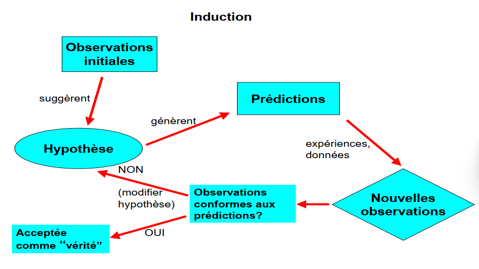
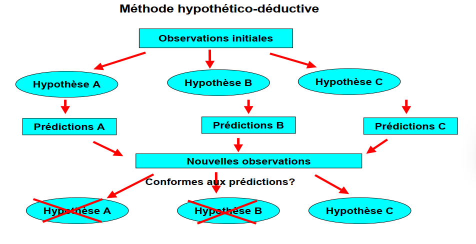
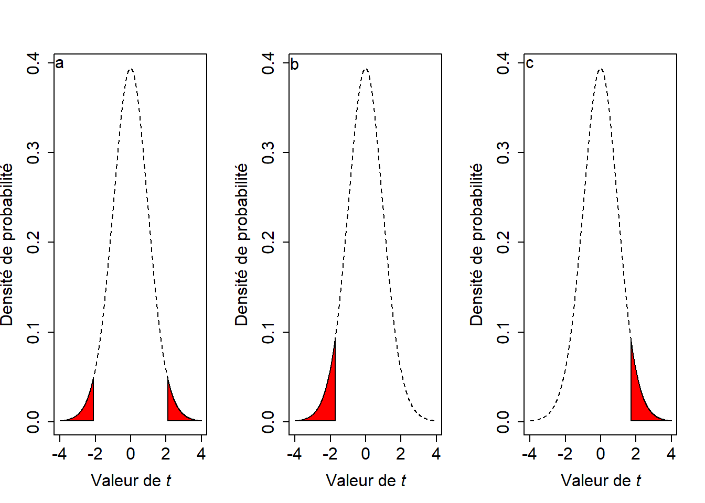
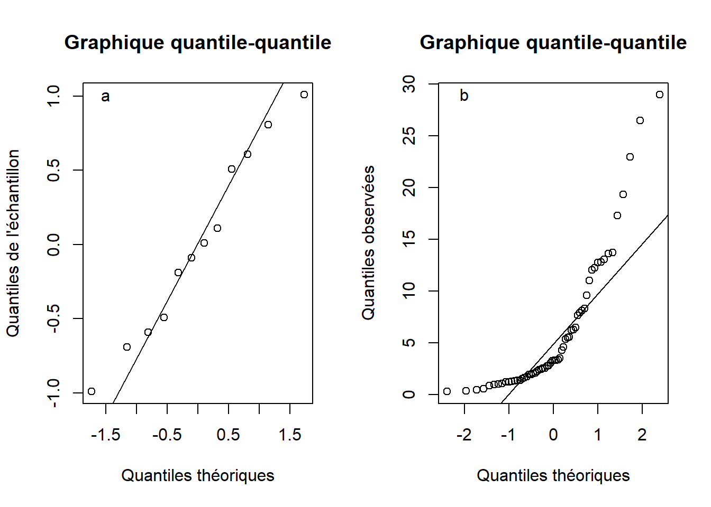
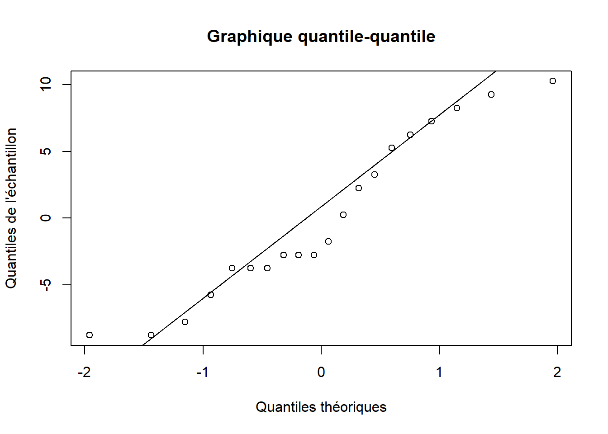

<!DOCTYPE html>
<html lang="" xml:lang="">
<head>

  <meta charset="utf-8" />
  <meta http-equiv="X-UA-Compatible" content="IE=edge" />
  <title>3.1 Leçon | Statistiques avec R</title>
  <meta name="description" content="3.1 Leçon | Statistiques avec R" />
  <meta name="generator" content="bookdown 0.39 and GitBook 2.6.7" />

  <meta property="og:title" content="3.1 Leçon | Statistiques avec R" />
  <meta property="og:type" content="book" />
  
  <meta property="og:description" content="3.1 Leçon | Statistiques avec R" />
  <meta name="github-repo" content="sci1018/sci1018" />

  <meta name="twitter:card" content="summary" />
  <meta name="twitter:title" content="3.1 Leçon | Statistiques avec R" />
  
  <meta name="twitter:description" content="3.1 Leçon | Statistiques avec R" />
  

<meta name="author" content="" />


  <meta name="viewport" content="width=device-width, initial-scale=1" />
  <meta name="apple-mobile-web-app-capable" content="yes" />
  <meta name="apple-mobile-web-app-status-bar-style" content="black" />
  
  
<link rel="prev" href="tests-dhypothèse-sur-un-seul-groupe.html"/>
<link rel="next" href="les-packages-avec-r.html"/>
<script src="libs/jquery-3.6.0/jquery-3.6.0.min.js"></script>
<script src="https://cdn.jsdelivr.net/npm/fuse.js@6.4.6/dist/fuse.min.js"></script>
<link href="libs/gitbook-2.6.7/css/style.css" rel="stylesheet" />
<link href="libs/gitbook-2.6.7/css/plugin-table.css" rel="stylesheet" />
<link href="libs/gitbook-2.6.7/css/plugin-bookdown.css" rel="stylesheet" />
<link href="libs/gitbook-2.6.7/css/plugin-highlight.css" rel="stylesheet" />
<link href="libs/gitbook-2.6.7/css/plugin-search.css" rel="stylesheet" />
<link href="libs/gitbook-2.6.7/css/plugin-fontsettings.css" rel="stylesheet" />
<link href="libs/gitbook-2.6.7/css/plugin-clipboard.css" rel="stylesheet" />


<link href="libs/anchor-sections-1.1.0/anchor-sections.css" rel="stylesheet" />
<link href="libs/anchor-sections-1.1.0/anchor-sections-hash.css" rel="stylesheet" />
<script src="libs/anchor-sections-1.1.0/anchor-sections.js"></script>
<script src="libs/kePrint-0.0.1/kePrint.js"></script>
<link href="libs/lightable-0.0.1/lightable.css" rel="stylesheet" />


<style type="text/css">
pre > code.sourceCode { white-space: pre; position: relative; }
pre > code.sourceCode > span { display: inline-block; line-height: 1.25; }
pre > code.sourceCode > span:empty { height: 1.2em; }
.sourceCode { overflow: visible; }
code.sourceCode > span { color: inherit; text-decoration: inherit; }
pre.sourceCode { margin: 0; }
@media screen {
div.sourceCode { overflow: auto; }
}
@media print {
pre > code.sourceCode { white-space: pre-wrap; }
pre > code.sourceCode > span { text-indent: -5em; padding-left: 5em; }
}
pre.numberSource code
  { counter-reset: source-line 0; }
pre.numberSource code > span
  { position: relative; left: -4em; counter-increment: source-line; }
pre.numberSource code > span > a:first-child::before
  { content: counter(source-line);
    position: relative; left: -1em; text-align: right; vertical-align: baseline;
    border: none; display: inline-block;
    -webkit-touch-callout: none; -webkit-user-select: none;
    -khtml-user-select: none; -moz-user-select: none;
    -ms-user-select: none; user-select: none;
    padding: 0 4px; width: 4em;
    color: #aaaaaa;
  }
pre.numberSource { margin-left: 3em; border-left: 1px solid #aaaaaa;  padding-left: 4px; }
div.sourceCode
  {  background-color: #f8f8f8; }
@media screen {
pre > code.sourceCode > span > a:first-child::before { text-decoration: underline; }
}
code span.al { color: #ef2929; } /* Alert */
code span.an { color: #8f5902; font-weight: bold; font-style: italic; } /* Annotation */
code span.at { color: #204a87; } /* Attribute */
code span.bn { color: #0000cf; } /* BaseN */
code span.cf { color: #204a87; font-weight: bold; } /* ControlFlow */
code span.ch { color: #4e9a06; } /* Char */
code span.cn { color: #8f5902; } /* Constant */
code span.co { color: #8f5902; font-style: italic; } /* Comment */
code span.cv { color: #8f5902; font-weight: bold; font-style: italic; } /* CommentVar */
code span.do { color: #8f5902; font-weight: bold; font-style: italic; } /* Documentation */
code span.dt { color: #204a87; } /* DataType */
code span.dv { color: #0000cf; } /* DecVal */
code span.er { color: #a40000; font-weight: bold; } /* Error */
code span.ex { } /* Extension */
code span.fl { color: #0000cf; } /* Float */
code span.fu { color: #204a87; font-weight: bold; } /* Function */
code span.im { } /* Import */
code span.in { color: #8f5902; font-weight: bold; font-style: italic; } /* Information */
code span.kw { color: #204a87; font-weight: bold; } /* Keyword */
code span.op { color: #ce5c00; font-weight: bold; } /* Operator */
code span.ot { color: #8f5902; } /* Other */
code span.pp { color: #8f5902; font-style: italic; } /* Preprocessor */
code span.sc { color: #ce5c00; font-weight: bold; } /* SpecialChar */
code span.ss { color: #4e9a06; } /* SpecialString */
code span.st { color: #4e9a06; } /* String */
code span.va { color: #000000; } /* Variable */
code span.vs { color: #4e9a06; } /* VerbatimString */
code span.wa { color: #8f5902; font-weight: bold; font-style: italic; } /* Warning */
</style>

<style type="text/css">
  
  div.hanging-indent{margin-left: 1.5em; text-indent: -1.5em;}
</style>

<link rel="stylesheet" href="style.css" type="text/css" />
</head>

<body>


  <div class="book without-animation with-summary font-size-2 font-family-1" data-basepath=".">

    <div class="book-summary">
      <nav role="navigation">

<ul class="summary">
<li><a href="./">TÉLUQ - SCI 1018</a></li>

<li class="divider"></li>
<li><a href="index.html#section" id="toc-section"></a></li>
<li class="part"><span><b>I SCI 1018</b></span></li>
<li class="chapter" data-level="" data-path="à-propos-du-cours.html"><a href="à-propos-du-cours.html"><i class="fa fa-check"></i>À propos du cours</a>
<ul>
<li class="chapter" data-level="" data-path="à-propos-du-cours.html"><a href="à-propos-du-cours.html#présentation"><i class="fa fa-check"></i>Présentation</a></li>
<li class="chapter" data-level="" data-path="à-propos-du-cours.html"><a href="à-propos-du-cours.html#feuille-de-route"><i class="fa fa-check"></i>Feuille de route</a></li>
<li class="chapter" data-level="" data-path="à-propos-du-cours.html"><a href="à-propos-du-cours.html#crédits"><i class="fa fa-check"></i>Crédits</a></li>
<li class="chapter" data-level="" data-path="à-propos-du-cours.html"><a href="à-propos-du-cours.html#contact"><i class="fa fa-check"></i>Contact</a></li>
</ul></li>
<li class="chapter" data-level="" data-path="ressources.html"><a href="ressources.html"><i class="fa fa-check"></i>Ressources</a>
<ul>
<li class="chapter" data-level="" data-path="ressources.html"><a href="ressources.html#travaux-notés"><i class="fa fa-check"></i>Travaux notés</a></li>
<li class="chapter" data-level="" data-path="ressources.html"><a href="ressources.html#données"><i class="fa fa-check"></i>Données</a></li>
<li class="chapter" data-level="" data-path="ressources.html"><a href="ressources.html#ressources-r"><i class="fa fa-check"></i>Ressources R</a></li>
<li class="chapter" data-level="" data-path="ressources.html"><a href="ressources.html#références"><i class="fa fa-check"></i>Références</a></li>
</ul></li>
<li class="part"><span><b>II GUIDE R</b></span></li>
<li class="chapter" data-level="" data-path="installation-de-r.html"><a href="installation-de-r.html"><i class="fa fa-check"></i>Installation de R</a>
<ul>
<li class="chapter" data-level="" data-path="installation-de-r.html"><a href="installation-de-r.html#où-se-procurer"><i class="fa fa-check"></i>Où se procurer ?</a></li>
<li class="chapter" data-level="" data-path="pour-débuter-avec-r.html"><a href="pour-débuter-avec-r.html"><i class="fa fa-check"></i>Pour débuter avec R</a></li>
<li class="chapter" data-level="" data-path="choisir-son-éditeur.html"><a href="choisir-son-éditeur.html"><i class="fa fa-check"></i>Choisir son éditeur</a></li>
</ul></li>
<li class="part"><span><b>III APPRENTISSAGE</b></span></li>
<li class="chapter" data-level="" data-path="programmation-avec-r.html"><a href="programmation-avec-r.html"><i class="fa fa-check"></i>Programmation avec R</a>
<ul>
<li class="chapter" data-level="" data-path="notions-générales.html"><a href="notions-générales.html"><i class="fa fa-check"></i>Notions générales</a></li>
<li class="chapter" data-level="" data-path="exercices.html"><a href="exercices.html"><i class="fa fa-check"></i>Exercices</a></li>
</ul></li>
<li class="chapter" data-level="1" data-path="statistiques-descriptives.html"><a href="statistiques-descriptives.html"><i class="fa fa-check"></i><b>1</b> Statistiques descriptives</a>
<ul>
<li class="chapter" data-level="1.1" data-path="leçon.html"><a href="leçon.html"><i class="fa fa-check"></i><b>1.1</b> Leçon</a>
<ul>
<li class="chapter" data-level="1.1.1" data-path="leçon.html"><a href="leçon.html#paramètre-vs-statistique"><i class="fa fa-check"></i><b>1.1.1</b> Paramètre vs statistique</a></li>
<li class="chapter" data-level="1.1.2" data-path="leçon.html"><a href="leçon.html#mesures-de-la-tendance-centrale"><i class="fa fa-check"></i><b>1.1.2</b> Mesures de la tendance centrale</a></li>
<li class="chapter" data-level="1.1.3" data-path="leçon.html"><a href="leçon.html#mesures-de-dispersion"><i class="fa fa-check"></i><b>1.1.3</b> Mesures de dispersion</a></li>
<li class="chapter" data-level="1.1.4" data-path="leçon.html"><a href="leçon.html#variables-aléatoires"><i class="fa fa-check"></i><b>1.1.4</b> Variables aléatoires</a></li>
<li class="chapter" data-level="1.1.5" data-path="leçon.html"><a href="leçon.html#loi-des-grands-nombres-et-théorème-de-la-limite-centrale"><i class="fa fa-check"></i><b>1.1.5</b> Loi des grands nombres et théorème de la limite centrale</a></li>
<li class="chapter" data-level="1.1.6" data-path="leçon.html"><a href="leçon.html#distribution-normale"><i class="fa fa-check"></i><b>1.1.6</b> Distribution normale</a></li>
<li class="chapter" data-level="1.1.7" data-path="leçon.html"><a href="leçon.html#conclusion"><i class="fa fa-check"></i><b>1.1.7</b> Conclusion</a></li>
</ul></li>
<li class="chapter" data-level="1.2" data-path="statistiques-de-base-avec-r.html"><a href="statistiques-de-base-avec-r.html"><i class="fa fa-check"></i><b>1.2</b> Statistiques de base avec R</a>
<ul>
<li class="chapter" data-level="1.2.1" data-path="statistiques-de-base-avec-r.html"><a href="statistiques-de-base-avec-r.html#fonctions-statistiques-de-base"><i class="fa fa-check"></i><b>1.2.1</b> Fonctions statistiques de base</a></li>
<li class="chapter" data-level="1.2.2" data-path="statistiques-de-base-avec-r.html"><a href="statistiques-de-base-avec-r.html#distribution-statistiques"><i class="fa fa-check"></i><b>1.2.2</b> Distribution statistiques</a></li>
</ul></li>
<li class="chapter" data-level="1.3" data-path="autoévaluation.html"><a href="autoévaluation.html"><i class="fa fa-check"></i><b>1.3</b> Autoévaluation</a>
<ul>
<li class="chapter" data-level="" data-path="autoévaluation.html"><a href="autoévaluation.html#question-1-1"><i class="fa fa-check"></i>Question 1</a></li>
<li class="chapter" data-level="" data-path="autoévaluation.html"><a href="autoévaluation.html#question-2-1"><i class="fa fa-check"></i>Question 2</a></li>
</ul></li>
</ul></li>
<li class="chapter" data-level="2" data-path="intervalles-de-confiance-et-stratégies-déchantillonnage.html"><a href="intervalles-de-confiance-et-stratégies-déchantillonnage.html"><i class="fa fa-check"></i><b>2</b> Intervalles de confiance et stratégies d’échantillonnage</a>
<ul>
<li class="chapter" data-level="2.1" data-path="leçon-1.html"><a href="leçon-1.html"><i class="fa fa-check"></i><b>2.1</b> Leçon</a>
<ul>
<li class="chapter" data-level="2.1.1" data-path="leçon-1.html"><a href="leçon-1.html#problèmes-déchantillonnage"><i class="fa fa-check"></i><b>2.1.1</b> Problèmes d’échantillonnage</a></li>
<li class="chapter" data-level="2.1.2" data-path="leçon-1.html"><a href="leçon-1.html#échantillonnage-complètement-aléatoire"><i class="fa fa-check"></i><b>2.1.2</b> Échantillonnage complètement aléatoire</a></li>
<li class="chapter" data-level="2.1.3" data-path="leçon-1.html"><a href="leçon-1.html#intervalle-de-confiance"><i class="fa fa-check"></i><b>2.1.3</b> Intervalle de confiance</a></li>
<li class="chapter" data-level="2.1.4" data-path="leçon-1.html"><a href="leçon-1.html#autres-stratégies-déchantillonnage"><i class="fa fa-check"></i><b>2.1.4</b> Autres stratégies d’échantillonnage</a></li>
<li class="chapter" data-level="2.1.5" data-path="leçon-1.html"><a href="leçon-1.html#conclusion-1"><i class="fa fa-check"></i><b>2.1.5</b> Conclusion</a></li>
</ul></li>
<li class="chapter" data-level="2.2" data-path="les-graphiques-avec-r.html"><a href="les-graphiques-avec-r.html"><i class="fa fa-check"></i><b>2.2</b> Les graphiques avec R</a>
<ul>
<li class="chapter" data-level="2.2.1" data-path="les-graphiques-avec-r.html"><a href="les-graphiques-avec-r.html#graphiques-de-base"><i class="fa fa-check"></i><b>2.2.1</b> Graphiques de base</a></li>
<li class="chapter" data-level="2.2.2" data-path="les-graphiques-avec-r.html"><a href="les-graphiques-avec-r.html#histogramme"><i class="fa fa-check"></i><b>2.2.2</b> Histogramme</a></li>
<li class="chapter" data-level="2.2.3" data-path="les-graphiques-avec-r.html"><a href="les-graphiques-avec-r.html#diagramme-à-bâtons"><i class="fa fa-check"></i><b>2.2.3</b> Diagramme à bâtons</a></li>
<li class="chapter" data-level="2.2.4" data-path="les-graphiques-avec-r.html"><a href="les-graphiques-avec-r.html#diagramme-de-boîtes-et-moustaches"><i class="fa fa-check"></i><b>2.2.4</b> Diagramme de boîtes et moustaches</a></li>
<li class="chapter" data-level="2.2.5" data-path="les-graphiques-avec-r.html"><a href="les-graphiques-avec-r.html#graphiques-génériques"><i class="fa fa-check"></i><b>2.2.5</b> Graphiques génériques</a></li>
<li class="chapter" data-level="2.2.6" data-path="les-graphiques-avec-r.html"><a href="les-graphiques-avec-r.html#sauvegarder-des-graphiques"><i class="fa fa-check"></i><b>2.2.6</b> Sauvegarder des graphiques</a></li>
</ul></li>
<li class="chapter" data-level="2.3" data-path="autoévaluation-1.html"><a href="autoévaluation-1.html"><i class="fa fa-check"></i><b>2.3</b> Autoévaluation</a>
<ul>
<li class="chapter" data-level="" data-path="autoévaluation-1.html"><a href="autoévaluation-1.html#question-1-2"><i class="fa fa-check"></i>Question 1</a></li>
<li class="chapter" data-level="" data-path="autoévaluation-1.html"><a href="autoévaluation-1.html#question-2-2"><i class="fa fa-check"></i>Question 2</a></li>
</ul></li>
</ul></li>
<li class="chapter" data-level="3" data-path="tests-dhypothèse-sur-un-seul-groupe.html"><a href="tests-dhypothèse-sur-un-seul-groupe.html"><i class="fa fa-check"></i><b>3</b> Tests d’hypothèse sur un seul groupe</a>
<ul>
<li class="chapter" data-level="3.1" data-path="leçon-2.html"><a href="leçon-2.html"><i class="fa fa-check"></i><b>3.1</b> Leçon</a>
<ul>
<li class="chapter" data-level="3.1.1" data-path="leçon-2.html"><a href="leçon-2.html#hypothèse"><i class="fa fa-check"></i><b>3.1.1</b> Hypothèse</a></li>
<li class="chapter" data-level="3.1.2" data-path="leçon-2.html"><a href="leçon-2.html#hypothèse-statistiques"><i class="fa fa-check"></i><b>3.1.2</b> Hypothèse statistiques</a></li>
<li class="chapter" data-level="3.1.3" data-path="leçon-2.html"><a href="leçon-2.html#erreurs-de-type-i-et-ii"><i class="fa fa-check"></i><b>3.1.3</b> Erreurs de type I et II</a></li>
<li class="chapter" data-level="3.1.4" data-path="leçon-2.html"><a href="leçon-2.html#utilisation-de-tests-dhypothèse"><i class="fa fa-check"></i><b>3.1.4</b> Utilisation de tests d’hypothèse</a></li>
<li class="chapter" data-level="3.1.5" data-path="leçon-2.html"><a href="leçon-2.html#estimation-de-paramètres"><i class="fa fa-check"></i><b>3.1.5</b> Estimation de paramètres</a></li>
<li class="chapter" data-level="3.1.6" data-path="leçon-2.html"><a href="leçon-2.html#tests-dhypothèse-sur-la-moyenne-dun-seul-groupe"><i class="fa fa-check"></i><b>3.1.6</b> Tests d’hypothèse sur la moyenne d’un seul groupe</a></li>
<li class="chapter" data-level="3.1.7" data-path="leçon-2.html"><a href="leçon-2.html#conclusion-2"><i class="fa fa-check"></i><b>3.1.7</b> Conclusion</a></li>
</ul></li>
<li class="chapter" data-level="3.2" data-path="les-packages-avec-r.html"><a href="les-packages-avec-r.html"><i class="fa fa-check"></i><b>3.2</b> Les packages avec R</a>
<ul>
<li class="chapter" data-level="3.2.1" data-path="les-packages-avec-r.html"><a href="les-packages-avec-r.html#activer-un-package"><i class="fa fa-check"></i><b>3.2.1</b> Activer un package</a></li>
<li class="chapter" data-level="3.2.2" data-path="les-packages-avec-r.html"><a href="les-packages-avec-r.html#installer-un-package"><i class="fa fa-check"></i><b>3.2.2</b> Installer un package</a></li>
<li class="chapter" data-level="3.2.3" data-path="les-packages-avec-r.html"><a href="les-packages-avec-r.html#mettre-à-jour-un-package"><i class="fa fa-check"></i><b>3.2.3</b> Mettre à jour un package</a></li>
<li class="chapter" data-level="3.2.4" data-path="les-packages-avec-r.html"><a href="les-packages-avec-r.html#désactiver-un-package"><i class="fa fa-check"></i><b>3.2.4</b> Désactiver un package</a></li>
<li class="chapter" data-level="3.2.5" data-path="les-packages-avec-r.html"><a href="les-packages-avec-r.html#désinstaller-un-package"><i class="fa fa-check"></i><b>3.2.5</b> Désinstaller un package</a></li>
</ul></li>
<li class="chapter" data-level="3.3" data-path="autoévaluation-2.html"><a href="autoévaluation-2.html"><i class="fa fa-check"></i><b>3.3</b> Autoévaluation</a>
<ul>
<li class="chapter" data-level="" data-path="autoévaluation-2.html"><a href="autoévaluation-2.html#question-1-3"><i class="fa fa-check"></i>Question 1</a></li>
<li class="chapter" data-level="" data-path="autoévaluation-2.html"><a href="autoévaluation-2.html#question-2-3"><i class="fa fa-check"></i>Question 2</a></li>
</ul></li>
</ul></li>
<li class="chapter" data-level="4" data-path="tests-dhypothèse-sur-deux-groupes.html"><a href="tests-dhypothèse-sur-deux-groupes.html"><i class="fa fa-check"></i><b>4</b> Tests d’hypothèse sur deux groupes</a>
<ul>
<li class="chapter" data-level="4.1" data-path="leçon-3.html"><a href="leçon-3.html"><i class="fa fa-check"></i><b>4.1</b> Leçon</a>
<ul>
<li class="chapter" data-level="4.1.1" data-path="leçon-3.html"><a href="leçon-3.html#tests-dhypothèses-sur-la-moyenne-de-deux-groupes-indépendants"><i class="fa fa-check"></i><b>4.1.1</b> Tests d’hypothèses sur la moyenne de deux groupes indépendants</a></li>
<li class="chapter" data-level="4.1.2" data-path="leçon-3.html"><a href="leçon-3.html#tests-dhypothèse-pour-deux-groupes-appariés"><i class="fa fa-check"></i><b>4.1.2</b> Tests d’hypothèse pour deux groupes appariés</a></li>
<li class="chapter" data-level="4.1.3" data-path="leçon-3.html"><a href="leçon-3.html#transformations"><i class="fa fa-check"></i><b>4.1.3</b> Transformations</a></li>
<li class="chapter" data-level="4.1.4" data-path="leçon-3.html"><a href="leçon-3.html#conclusion-3"><i class="fa fa-check"></i><b>4.1.4</b> Conclusion</a></li>
</ul></li>
<li class="chapter" data-level="4.2" data-path="laboratoire.html"><a href="laboratoire.html"><i class="fa fa-check"></i><b>4.2</b> Laboratoire</a>
<ul>
<li class="chapter" data-level="" data-path="laboratoire.html"><a href="laboratoire.html#question-1-4"><i class="fa fa-check"></i>Question 1</a></li>
<li class="chapter" data-level="" data-path="laboratoire.html"><a href="laboratoire.html#question-2-4"><i class="fa fa-check"></i>Question 2</a></li>
</ul></li>
</ul></li>
<li class="chapter" data-level="5" data-path="analyse-de-fréquences-et-test-du-khi-carré-chi2.html"><a href="analyse-de-fréquences-et-test-du-khi-carré-chi2.html"><i class="fa fa-check"></i><b>5</b> Analyse de fréquences et test du khi carré (<span class="math inline">\(\chi^2\)</span>)</a>
<ul>
<li class="chapter" data-level="5.1" data-path="leçon-4.html"><a href="leçon-4.html"><i class="fa fa-check"></i><b>5.1</b> Leçon</a>
<ul>
<li class="chapter" data-level="5.1.1" data-path="leçon-4.html"><a href="leçon-4.html#analyse-de-fréquences-le-test-du-khi-carré-chi2"><i class="fa fa-check"></i><b>5.1.1</b> Analyse de fréquences : le test du khi carré (<span class="math inline">\(\chi^2\)</span>)</a></li>
<li class="chapter" data-level="5.1.2" data-path="leçon-4.html"><a href="leçon-4.html#tableau-de-contingence"><i class="fa fa-check"></i><b>5.1.2</b> Tableau de contingence</a></li>
<li class="chapter" data-level="5.1.3" data-path="leçon-4.html"><a href="leçon-4.html#alternative-au-test-du-chi2"><i class="fa fa-check"></i><b>5.1.3</b> Alternative au test du <span class="math inline">\(\chi^2\)</span></a></li>
<li class="chapter" data-level="5.1.4" data-path="leçon-4.html"><a href="leçon-4.html#le-paradoxe-de-simpson"><i class="fa fa-check"></i><b>5.1.4</b> Le paradoxe de Simpson</a></li>
<li class="chapter" data-level="5.1.5" data-path="leçon-4.html"><a href="leçon-4.html#conclusion-4"><i class="fa fa-check"></i><b>5.1.5</b> Conclusion</a></li>
</ul></li>
<li class="chapter" data-level="5.2" data-path="autoévaluation-3.html"><a href="autoévaluation-3.html"><i class="fa fa-check"></i><b>5.2</b> Autoévaluation</a>
<ul>
<li class="chapter" data-level="" data-path="autoévaluation-3.html"><a href="autoévaluation-3.html#question-1-5"><i class="fa fa-check"></i>Question 1</a></li>
<li class="chapter" data-level="" data-path="autoévaluation-3.html"><a href="autoévaluation-3.html#question-2-5"><i class="fa fa-check"></i>Question 2</a></li>
</ul></li>
</ul></li>
<li class="chapter" data-level="6" data-path="analyse-de-variance-à-un-critère.html"><a href="analyse-de-variance-à-un-critère.html"><i class="fa fa-check"></i><b>6</b> Analyse de variance à un critère</a>
<ul>
<li class="chapter" data-level="6.1" data-path="leçon-5.html"><a href="leçon-5.html"><i class="fa fa-check"></i><b>6.1</b> Leçon</a>
<ul>
<li class="chapter" data-level="6.1.1" data-path="leçon-5.html"><a href="leçon-5.html#comparaison-de-plusieurs-groupes"><i class="fa fa-check"></i><b>6.1.1</b> Comparaison de plusieurs groupes</a></li>
<li class="chapter" data-level="6.1.2" data-path="leçon-5.html"><a href="leçon-5.html#analyse-de-variance-anova"><i class="fa fa-check"></i><b>6.1.2</b> Analyse de variance (ANOVA)</a></li>
<li class="chapter" data-level="6.1.3" data-path="leçon-5.html"><a href="leçon-5.html#comparaison-multiples"><i class="fa fa-check"></i><b>6.1.3</b> Comparaison multiples</a></li>
<li class="chapter" data-level="6.1.4" data-path="leçon-5.html"><a href="leçon-5.html#conclusion-5"><i class="fa fa-check"></i><b>6.1.4</b> Conclusion</a></li>
</ul></li>
<li class="chapter" data-level="6.2" data-path="les-boucles-avec-r.html"><a href="les-boucles-avec-r.html"><i class="fa fa-check"></i><b>6.2</b> Les boucles avec R</a>
<ul>
<li class="chapter" data-level="6.2.1" data-path="les-boucles-avec-r.html"><a href="les-boucles-avec-r.html#les-boucles"><i class="fa fa-check"></i><b>6.2.1</b> Les boucles</a></li>
<li class="chapter" data-level="6.2.2" data-path="les-boucles-avec-r.html"><a href="les-boucles-avec-r.html#alternatives-aux-boucles"><i class="fa fa-check"></i><b>6.2.2</b> Alternatives aux boucles</a></li>
</ul></li>
<li class="chapter" data-level="6.3" data-path="autoévaluation-4.html"><a href="autoévaluation-4.html"><i class="fa fa-check"></i><b>6.3</b> Autoévaluation</a>
<ul>
<li class="chapter" data-level="" data-path="autoévaluation-4.html"><a href="autoévaluation-4.html#question-1-6"><i class="fa fa-check"></i>Question 1</a></li>
<li class="chapter" data-level="" data-path="autoévaluation-4.html"><a href="autoévaluation-4.html#question-2-6"><i class="fa fa-check"></i>Question 2</a></li>
</ul></li>
</ul></li>
<li class="chapter" data-level="7" data-path="analyse-de-variance-à-deux-critères.html"><a href="analyse-de-variance-à-deux-critères.html"><i class="fa fa-check"></i><b>7</b> Analyse de variance à deux critères</a>
<ul>
<li class="chapter" data-level="7.1" data-path="leçon-6.html"><a href="leçon-6.html"><i class="fa fa-check"></i><b>7.1</b> Leçon</a>
<ul>
<li class="chapter" data-level="7.1.1" data-path="leçon-6.html"><a href="leçon-6.html#anova-à-deux-critères"><i class="fa fa-check"></i><b>7.1.1</b> ANOVA à deux critères</a></li>
<li class="chapter" data-level="7.1.2" data-path="leçon-6.html"><a href="leçon-6.html#suppositions-et-dispositif-expérimental"><i class="fa fa-check"></i><b>7.1.2</b> Suppositions et dispositif expérimental</a></li>
<li class="chapter" data-level="7.1.3" data-path="leçon-6.html"><a href="leçon-6.html#hypothèses-statistiques-1"><i class="fa fa-check"></i><b>7.1.3</b> Hypothèses statistiques</a></li>
<li class="chapter" data-level="7.1.4" data-path="leçon-6.html"><a href="leçon-6.html#sommes-des-carrés-1"><i class="fa fa-check"></i><b>7.1.4</b> Sommes des carrés</a></li>
<li class="chapter" data-level="7.1.5" data-path="leçon-6.html"><a href="leçon-6.html#effets-additifs"><i class="fa fa-check"></i><b>7.1.5</b> Effets additifs</a></li>
<li class="chapter" data-level="7.1.6" data-path="leçon-6.html"><a href="leçon-6.html#conclusion-6"><i class="fa fa-check"></i><b>7.1.6</b> Conclusion</a></li>
</ul></li>
<li class="chapter" data-level="7.2" data-path="laboratoire-1.html"><a href="laboratoire-1.html"><i class="fa fa-check"></i><b>7.2</b> Laboratoire</a>
<ul>
<li class="chapter" data-level="" data-path="laboratoire-1.html"><a href="laboratoire-1.html#question-1-7"><i class="fa fa-check"></i>Question 1</a></li>
</ul></li>
</ul></li>
<li class="chapter" data-level="8" data-path="blocs-complets-aléatoires.html"><a href="blocs-complets-aléatoires.html"><i class="fa fa-check"></i><b>8</b> Blocs complets aléatoires</a>
<ul>
<li class="chapter" data-level="8.1" data-path="leçon-7.html"><a href="leçon-7.html"><i class="fa fa-check"></i><b>8.1</b> Leçon</a>
<ul>
<li class="chapter" data-level="8.1.1" data-path="leçon-7.html"><a href="leçon-7.html#effets-fixes-et-effets-aléatoires"><i class="fa fa-check"></i><b>8.1.1</b> Effets fixes et effets aléatoires</a></li>
<li class="chapter" data-level="8.1.2" data-path="leçon-7.html"><a href="leçon-7.html#blocs-complets-aléatoires-1"><i class="fa fa-check"></i><b>8.1.2</b> Blocs complets aléatoires</a></li>
<li class="chapter" data-level="8.1.3" data-path="leçon-7.html"><a href="leçon-7.html#conclusion-7"><i class="fa fa-check"></i><b>8.1.3</b> Conclusion</a></li>
</ul></li>
<li class="chapter" data-level="8.2" data-path="autoévaluation-5.html"><a href="autoévaluation-5.html"><i class="fa fa-check"></i><b>8.2</b> Autoévaluation</a>
<ul>
<li class="chapter" data-level="" data-path="autoévaluation-5.html"><a href="autoévaluation-5.html#question-1-8"><i class="fa fa-check"></i>Question 1</a></li>
<li class="chapter" data-level="" data-path="autoévaluation-5.html"><a href="autoévaluation-5.html#question-2-7"><i class="fa fa-check"></i>Question 2</a></li>
</ul></li>
</ul></li>
<li class="chapter" data-level="9" data-path="élaboration-et-optimisation-de-plans-déchantillonnage.html"><a href="élaboration-et-optimisation-de-plans-déchantillonnage.html"><i class="fa fa-check"></i><b>9</b> Élaboration et optimisation de plans d’échantillonnage</a>
<ul>
<li class="chapter" data-level="9.1" data-path="leçon-8.html"><a href="leçon-8.html"><i class="fa fa-check"></i><b>9.1</b> Leçon</a>
<ul>
<li class="chapter" data-level="9.1.1" data-path="leçon-8.html"><a href="leçon-8.html#plans-déchantillonnage"><i class="fa fa-check"></i><b>9.1.1</b> Plans d’échantillonnage</a></li>
<li class="chapter" data-level="9.1.2" data-path="leçon-8.html"><a href="leçon-8.html#nos-meilleurs-alliés-dans-lélaboration-dun-plan-déchantillonnage"><i class="fa fa-check"></i><b>9.1.2</b> Nos meilleurs alliés dans l’élaboration d’un plan d’échantillonnage</a></li>
<li class="chapter" data-level="9.1.3" data-path="leçon-8.html"><a href="leçon-8.html#problèmes-associés-à-certains-plan-déchantillonnage"><i class="fa fa-check"></i><b>9.1.3</b> Problèmes associés à certains plan d’échantillonnage</a></li>
<li class="chapter" data-level="9.1.4" data-path="leçon-8.html"><a href="leçon-8.html#conclusion-8"><i class="fa fa-check"></i><b>9.1.4</b> Conclusion</a></li>
</ul></li>
<li class="chapter" data-level="9.2" data-path="laboratoire-2.html"><a href="laboratoire-2.html"><i class="fa fa-check"></i><b>9.2</b> Laboratoire</a>
<ul>
<li class="chapter" data-level="" data-path="laboratoire-2.html"><a href="laboratoire-2.html#instructions"><i class="fa fa-check"></i>Instructions</a></li>
<li class="chapter" data-level="" data-path="laboratoire-2.html"><a href="laboratoire-2.html#suggestions-de-thèmes-à-étudier"><i class="fa fa-check"></i>Suggestions de thèmes à étudier</a></li>
</ul></li>
</ul></li>
<li class="chapter" data-level="10" data-path="régression-linéaire-simple-et-corrélation.html"><a href="régression-linéaire-simple-et-corrélation.html"><i class="fa fa-check"></i><b>10</b> Régression linéaire simple et corrélation</a>
<ul>
<li class="chapter" data-level="10.1" data-path="leçon-9.html"><a href="leçon-9.html"><i class="fa fa-check"></i><b>10.1</b> Leçon</a>
<ul>
<li class="chapter" data-level="10.1.1" data-path="leçon-9.html"><a href="leçon-9.html#la-régression-linéaire"><i class="fa fa-check"></i><b>10.1.1</b> La régression linéaire</a></li>
<li class="chapter" data-level="10.1.2" data-path="leçon-9.html"><a href="leçon-9.html#corrélation"><i class="fa fa-check"></i><b>10.1.2</b> Corrélation</a></li>
<li class="chapter" data-level="10.1.3" data-path="leçon-9.html"><a href="leçon-9.html#corrélation-vs-régression"><i class="fa fa-check"></i><b>10.1.3</b> Corrélation vs régression</a></li>
<li class="chapter" data-level="10.1.4" data-path="leçon-9.html"><a href="leçon-9.html#conclusion-9"><i class="fa fa-check"></i><b>10.1.4</b> Conclusion</a></li>
</ul></li>
<li class="chapter" data-level="10.2" data-path="autoévaluation-6.html"><a href="autoévaluation-6.html"><i class="fa fa-check"></i><b>10.2</b> Autoévaluation</a>
<ul>
<li class="chapter" data-level="" data-path="autoévaluation-6.html"><a href="autoévaluation-6.html#question-1-9"><i class="fa fa-check"></i>Question 1</a></li>
<li class="chapter" data-level="" data-path="autoévaluation-6.html"><a href="autoévaluation-6.html#question-2-8"><i class="fa fa-check"></i>Question 2</a></li>
</ul></li>
</ul></li>
<li class="divider"></li>
<li><a href="https://github.com/rstudio/bookdown" target="blank">Published with bookdown</a></li>

</ul>

      </nav>
    </div>

    <div class="book-body">
      <div class="body-inner">
        <div class="book-header" role="navigation">
          <h1>
            <i class="fa fa-circle-o-notch fa-spin"></i><a href="./">Statistiques avec R</a>
          </h1>
        </div>

        <div class="page-wrapper" tabindex="-1" role="main">
          <div class="page-inner">

            <section class="normal" id="section-">
<div id="leçon-2" class="section level2 hasAnchor" number="3.1">
<h2><span class="header-section-number">3.1</span> Leçon<a href="leçon-2.html#leçon-2" class="anchor-section" aria-label="Anchor link to header"></a></h2>
<div id="hypothèse" class="section level3 hasAnchor" number="3.1.1">
<h3><span class="header-section-number">3.1.1</span> Hypothèse<a href="leçon-2.html#hypothèse" class="anchor-section" aria-label="Anchor link to header"></a></h3>
<p>Une <strong>hypothèse</strong> est une explication potentielle que l’on formule pour décrire nos observations du monde extérieur. On entend par “observations”“, les”données” qui sont recueillies. Les hypothèses impliquent souvent une relation de cause à effet. Les études scientifiques permettent de comprendre la cause des phénomènes observés. La formulation d’hypothèses peut provenir d’observations personnelles préliminaires, de prédictions à partir de modèles théoriques, de la littérature scientifique ou du raisonnement.</p>
<p>Les données utilisées pour tester les hypothèses peuvent provenir d’<strong>expériences contrôlées</strong> (<em>controlled experiments</em>) ou d’<strong>études d’observation</strong> (<em>observational studies</em>). Lors d’une expérience contrôlée (exemple 3.1), les traitements sont assignés aléatoirement aux unités expérimentales, et on contrôle toutes les variables sauf celles pour lesquelles on veut mesurer l’effet. Le résultat d’une expérience est très robuste et permet de tirer des conclusions solides quant aux traitements étudiés. L’étude d’observation (exemple 3.2), quant à elle, implique de sélectionner aléatoirement les unités expérimentales, mais l’assignation des traitements n’est pas déterminée aléatoirement par l’expérimentateur. Puisqu’on contrôle très peu de variables, il est plus difficile de conclure en une relation de cause à effet d’une variable sur une autre.</p>
<p>On peut faire davantage confiance à des conclusions qui reposent sur des manipulations plutôt que sur des observations où on ne contrôle peu ou pas de variables. Les deux types d’approches expérimentales sont importantes et complémentaires. L’expérience contrôlée peut parfois manquer de réalisme en simplifiant trop le système à l’étude, alors que l’étude d’observation mesure la variation en conditions plus naturelles, mais non contrôlées. Une étude d’observation peut révéler des patrons bruts et suggérer une expérience contrôlée afin de raffiner notre enquête.</p>
<div class="exemple" section="3">
<p>On réalise une expérience visant l’effet de différents types de fourrage sur le goût du lait de vache. Pour ce faire, on sélectionne 30 vaches de la même race et on leur attribue aléatoirement l’un de trois types de fourrage (millet, trèfle, et luzerne), afin d’avoir 10 vaches pour chaque traitement. On soumet les vaches aux mêmes conditions de séjour (photopériode, température ambiante, disponibilité d’eau, “bonne” musique).</p>
<p>À la fin d’une période donnée pendant laquelle les vaches ont été nourries avec le type de fourrage prescrit (p. ex., une semaine, un mois), nous pourrons ensuite échantillonner le lait de chaque vache. Après avoir soumis les échantillons de lait à notre goûteur, le résultat de l’expérience permettra de déterminer la différence de goût du lait selon le type de fourrage perceptible par un goûteur.</p>
</div>
<div class="exemple" section="3">
<p>On réalise une étude d’observation afin d’étudier le nombre de grenouilles présentant des malformations dans des étangs en milieux agricoles. On sélectionne aléatoirement 20 étangs dans des milieux à faible intensité agricole et 20 étangs additionnels dans des milieux à forte intensité agricole. Dans chaque étang, on effectue des inventaires afin d’estimer le nombre de grenouilles qui ont des malformations à l’aide de méthodes qui tiennent compte de la probabilité de détection. On mesure également d’autres variables, telles que la taille de l’étang, la distance de chaque étang par rapport au champ agricole le plus près, et la concentration d’une substance toxique dans l’eau de chaque étang.</p>
<p>Une analyse statistique permet de déterminer comment le nombre de malformations varie selon les autres variables mesurées. Si on observe que le nombre de malformations est plus élevé dans les étangs près des champs agricoles, on ne peut pas conclure avec certitude que cette augmentation est due à la proximité des champs puisque nous n’avons pas contrôlé toutes les variables.</p>
<p>En fait, il se peut que certaines substances toxiques différentes de celles qu’on a mesurées, provenant des champs agricoles situés à proximité, soient amenées par ruissellement dans les étangs. Ainsi, la cause des malformations n’est pas nécessairement la proximité des champs agricoles, mais plutôt les produits toxiques qui y sont appliqués. Après avoir détecté un effet de la proximité, il serait approprié d’effectuer une expérience contrôlée en faisant varier certaines variables pour quantifier directement leurs effets.</p>
</div>
<div id="hypothèse-scientifique" class="section level4 hasAnchor" number="3.1.1.1">
<h4><span class="header-section-number">3.1.1.1</span> Hypothèse scientifique<a href="leçon-2.html#hypothèse-scientifique" class="anchor-section" aria-label="Anchor link to header"></a></h4>
<p>Une <strong>hypothèse scientifique</strong> est une hypothèse qui peut être testée avec des observations ou des résultats expérimentaux et qui permettront de la modifier ou de la rejeter. Toute bonne hypothèse scientifique devrait générer de nouvelles prédictions<a href="#fn11" class="footnote-ref" id="fnref11"><sup>11</sup></a>. À noter aussi qu’un modèle peut appuyer une hypothèse particulière et que ce modèle mène à des prédictions. Une bonne hypothèse scientifique ne devrait fournir qu’une seule prédiction qui ne provient pas d’explications alternatives. Finalement, une bonne hypothèse doit avoir la possibilité d’être rejetée ou <strong>réfutée</strong> (ou falsifiée) en présence de données qui la contredisent.</p>
<p>Une hypothèse qui n’a aucune chance d’être rejetée, pour laquelle il est impossible de récolter des données, n’est pas une hypothèse scientifique – on doit distinguer croyance et hypothèse. Par exemple, on pourrait considérer les énoncés suivants qui ne peuvent pas être réfutés et qui ne sont donc pas de vraies hypothèses (pour le moment, en tout cas …) :</p>
<blockquote>
<p>Il y a de la vie sur Pluton.</p>
</blockquote>
<blockquote>
<p>Les populations de yétis et de sasquatchs sont repoussées dans des milieux encore plus reculés à la suite du développment urbain.</p>
</blockquote>
<blockquote>
<p>Les chiens rêvent à leurs meilleurs moments de la journée pendant la nuit.</p>
</blockquote>
<p>En contrepartie, les énoncés suivants sont des hypothèses qui peuvent être potentiellement réfutées avec des données:</p>
<blockquote>
<p>La lumière abondante dans les coupes forestières favorise les espèces végétales intolérantes à l’ombre.</p>
</blockquote>
<blockquote>
<p>Un groupe de grande taille confère à des poissons une meilleure chance de survie face à un prédateur.</p>
</blockquote>
<blockquote>
<p>Les ordinateurs de la compagnie XX ont une durée de vie plus grande que les ordinateurs manufacturés par la compagnie YY.</p>
</blockquote>
<p>Pour chacune des hypothèses ci-dessus, on pourrait développer un protocole afin de tester l’hypothèse à partir d’une expérience contrôlée ou d’une étude d’observation. Les données récoltées permettraient de rejeter ou non l’hypothèse. Il faut garder à l’esprit que la formulation d’une bonne hypothèse est le point de départ d’un bon projet scientifique.</p>
</div>
<div id="méthode-scientifique" class="section level4 hasAnchor" number="3.1.1.2">
<h4><span class="header-section-number">3.1.1.2</span> Méthode scientifique<a href="leçon-2.html#méthode-scientifique" class="anchor-section" aria-label="Anchor link to header"></a></h4>
<p>La <strong>méthode scientifique</strong> est une approche utilisée pour élaborer des hypothèses selon des observations et des prédictions. Différents types de raisonnements peuvent être utilisés selon la méthode scientifique, notamment la <strong>déduction</strong> (exemple 3.3) et l’<strong>induction</strong> (exemple 3.4). Le raisonnement déductif consiste à tirer des conclusions (inférer) à partir de données ou modèles partant du <strong>général pour arriver au spécifique</strong>. Par opposition, le raisonnement inductif consiste à tirer des conclusions à partir de données ou modèles partant du <strong>spécifique au général</strong>.</p>
<div class="exemple" section="3">
<p>Voici un exemple de déduction :<br />
1. Tous les mélèzes en Abitibi sont de l’espèce <em>Larix laricina</em>.<br />
2. J’ai échantillonné ce mélèze en Abitibi.<br />
3. Ce mélèze est un <em>Larix laricina</em>.<br />
Les éléments 1 et 2 sont des <strong>prémisses</strong> et le troisième est la conclusion. Ensemble, ces trois éléments forment un <strong>syllogisme</strong>.</p>
</div>
<div class="exemple" section="3">
<p>Voici un exemple d’induction :<br />
1. Ces 25 mélèzes sont des <em>Larix laricina</em>.<br />
2. Ces 25 mélèzes ont été échantillonnés en Abitibi.<br />
3. Tous les mélèzes d’Abitibi sont des <em>Larix laricina</em>.</p>
</div>
<p>Avec la déduction, si les prémisses sont vraies, la conclusion a de très bonnes chances d’être correcte, alors qu’avec l’induction, si les prémisses sont vraies, la conclusion est probablement vraie, mais elle peut aussi être fausse. On utilise l’un ou l’autre de ces raisonnements pour construire des hypothèses, mais on peut aussi les utiliser de façon concomitante. La statistique est une approche inductive, puisqu’on tire des conclusions en partant du spécifique (l’échantillon) pour l’appliquer au plus général (la population). La figure <a href="leçon-2.html#fig:induction">3.1</a> montre l’utilisation de l’induction dans la démarche scientifique.</p>
<div class="figure" style="text-align: center"><span style="display:block;" id="fig:induction"></span>
<a href="images/induction.png" target="_blank"></a>
<p class="caption">
Figure 3.1: Schéma de l’approche d’induction en sciences.
</p>
</div>
</div>
<div id="inférence-bayésienne" class="section level4 hasAnchor" number="3.1.1.3">
<h4><span class="header-section-number">3.1.1.3</span> Inférence bayésienne<a href="leçon-2.html#inférence-bayésienne" class="anchor-section" aria-label="Anchor link to header"></a></h4>
<p>L’<strong>inférence bayésienne</strong> est une version moderne de l’approche inductive qui peut utiliser toute l’information disponible (résultats publiés, estimations des paramètres, croyances ou connaissances) afin de construire une hypothèse. Cette méthode a été développée au 18<span class="math inline">\(^{\mathrm{e}}\)</span> siècle. Cependant, comme les calculs sont très complexes, elle a été peu utilisée jusqu’au début des années 1990. Avec la venue d’ordinateurs puissants et d’algorithmes efficaces disponibles dans des logiciels libres (<code>BUGS</code>, <code>WinBUGS</code>, <code>OpenBUGS</code>, <code>JAGS</code>), cette branche des statistiques est en plein essor. Puisque le cours couvre les statistiques fréquentistes ou fishériennes, développées par Sir Ronald A. Fisher, nous ne discuterons pas plus des approches bayésiennes qui nécessitent une connaissance approfondie des statistiques.</p>
</div>
<div id="méthode-hypothético-déductive" class="section level4 hasAnchor" number="3.1.1.4">
<h4><span class="header-section-number">3.1.1.4</span> Méthode hypothético-déductive<a href="leçon-2.html#méthode-hypothético-déductive" class="anchor-section" aria-label="Anchor link to header"></a></h4>
<p>Avec la méthode hypothético-déductive, au lieu de commencer avec une seule hypothèse, on considère plusieurs hypothèses de travail pouvant expliquer le phénomène d’intérêt (Figure <a href="leçon-2.html#fig:hypodeduction">3.2</a>). Chaque hypothèse est testée et peut être réfutée avec de nouvelles données. On élimine des hypothèses au fur et à mesure selon les données qui sont récoltées dans des études ou des expériences successives. L’explication la plus plausible est l’hypothèse qui a résisté à la falsification à plusieurs reprises.</p>
<div class="figure" style="text-align: center"><span style="display:block;" id="fig:hypodeduction"></span>
<a href="images/hypodeduction.png" target="_blank"></a>
<p class="caption">
Figure 3.2: Schéma de l’approche hypothético-déductive en sciences. L’hypothèse qui est conforme aux prédictions est celle qui a résisté à la falsification après plusieurs expériences successives.
</p>
</div>
<p>La méthode hypothético-déductive comporte plusieurs avantages :</p>
<ul>
<li>Elle force à considérer plusieurs hypothèses dès le début.</li>
<li>Elle illustre les différences de prédiction entre chaque hypothèse.</li>
<li>Les explications simples sont les premières considérées, les plus complexes ensuite.</li>
<li>Plusieurs hypothèses sont testées en même temps (l’induction teste une hypothèse à la fois).</li>
</ul>
<p>Toutefois, la méthode hypothético-déductive comporte un désavantage important :</p>
<ul>
<li>La méthode ne fonctionne pas si l’hypothèse correcte ne figure pas parmi les hypothèses énoncées avant l’expérience. En contrepartie, la méthode inductive peut commencer par une hypothèse incorrecte mais peut arriver à celle correcte après modification répétée de l’hypothèse suite à de nouvelles observations.</li>
</ul>
</div>
</div>
<div id="hypothèse-statistiques" class="section level3 hasAnchor" number="3.1.2">
<h3><span class="header-section-number">3.1.2</span> Hypothèse statistiques<a href="leçon-2.html#hypothèse-statistiques" class="anchor-section" aria-label="Anchor link to header"></a></h3>
<p>Alors que l’hypothèse scientifique est l’élément qui devrait avoir motivé l’expérience, l’<strong>hypothèse statistique</strong> est une formulation “mathématique” de l’hypothèse scientifique. En effet, dans les approches classiques de tests d’hypothèse statistique, on compte deux hypothèses, l’<strong>hypothèse nulle</strong> (<span class="math inline">\(H_0\)</span>) et l’<strong>hypothèse alternative</strong> (<span class="math inline">\(H_a\)</span>). L’hypothèse nulle (<span class="math inline">\(H_0\)</span>) représente l’absence de différence ou l’absence d’un effet. Elle se base sur un test statistique et une distribution indiquant que la variabilité observée dans les données est due au hasard ou à l’erreur d’échantillonnage. En d’autres mots, l’hypothèse nulle suppose qu’il ne se passe rien.</p>
<p>L’hypothèse alternative (<span class="math inline">\(H_a\)</span>), quant à elle, est l’hypothèse statistique qui correspond à un effet ou une différence. C’est cette hypothèse qui indique qu’il se passe quelque chose. Le test d’hypothèse statistique consiste à essayer de rejeter <span class="math inline">\(H_0\)</span>. Si l’hypothèse nulle (<span class="math inline">\(H_0\)</span>) est fausse, on la rejette et on se tourne vers l’hypothèse alternative (<span class="math inline">\(H_a\)</span>). On parle toujours en termes de <span class="math inline">\(H_0\)</span>: on rejette <span class="math inline">\(H_0\)</span> ou non. On ne peut pas accepter <span class="math inline">\(H_0\)</span>, seulement échouer de la rejeter faute de preuves. C’est ce système binaire d’hypothèses que les chercheurs utilisent depuis près d’un siècle. Toutefois, des méthodes alternatives ont été développées récemment qui permettent de comparer plusieurs hypothèses (&gt; 2) simultanément, à l’aide de la sélection de modèles.</p>
<div class="exemple" section="3">
<p>On réalise une expérience pour tester l’hypothèse scientifique suivante: la lumière abondante dans les coupes forestières favorise les espèces végétales intolérantes à l’ombre.</p>
<p>Pour ce faire, on pourrait comparer la croissance moyenne de certaines espèces intolérantes à l’ombre dans 10 parcelles en coupes forestières et 10 parcelles en forêt sans coupe (témoins). Après avoir récolté les données, on pourrait procéder à une analyse statistique pour tester les hypothèses statistiques suivantes à propos des moyennes des deux groupes:
<span class="math inline">\(H_0\)</span> (hypothèse nulle): <span class="math inline">\(\mu_{coupes} = \mu_{t\acute{e}moins}\)</span> \
<span class="math inline">\(H_a\)</span> (hypothèse alternative): <span class="math inline">\(\mu_{coupes} \neq \mu_{t\acute{e}moins}\)</span></p>
<p>Si le test statistique indique que la différence observée entre les parcelle coupées et témoins est peu probable pour un échantillon de même taille tiré à partir de la même population lorsque <span class="math inline">\(H_0\)</span> est vraie, nous allons rejeter <span class="math inline">\(H_0\)</span>. En d’autres mots, on se base sur une distribution statistique qui reflète <span class="math inline">\(H_0\)</span> pour situer la valeur observée de la statistique du test obtenue à partir de l’échantillon. Si cette valeur se trouve dans les extrémités de la distribution (c.-à-d., dans les queues), on va considérer cette valeur comme peu plausible lorsque <span class="math inline">\(H_0\)</span> est vraie. On conclura alors qu’il y a une différence de croissance des espèces intolérantes à l’ombre dans les coupes et dans les témoins, ce qui confirmera notre hypothèse scientifique de départ.</p>
</div>
<p>Pour déterminer si une différence est <strong>statistiquement significative</strong> (<em>statistically significant</em>) entre deux groupes ou deux échantillons, on doit procéder à un test statistique. Le test statistique est le processus par lequel on évalue la probabilité d’observer la valeur d’une statistique lorsque <span class="math inline">\(H_0\)</span> est vraie pour une taille d’échantillon donnée dans une population. Par le fait même, nous effectuons un test d’hypothèse.</p>
<p>Lorsqu’on compare les moyennes de deux groupes, il est peu probable d’observer exactement les mêmes valeurs dans les deux groupes. Il faut alors déterminer si la différence que nous avons observée est due à la variabilité naturelle dans la population ou à un effet réel (une vraie différence). Pour ce faire, il faut connaître la variabilité (la variance, <span class="math inline">\(s^2\)</span>) dans chaque groupe. Il est normal que deux échantillons tirés de la même population soient différents en raison de la variabilité naturelle de la population et de l’erreur d’échantillonnage. Il faut un moyen de décider si la différence observée est due au hasard ou à un effet réel.</p>
<p>Le <strong>seuil de signification</strong> (<span class="math inline">\(\alpha\)</span>, <em>significance level</em>) est justement un critère qui est utilisé depuis longtemps pour distinguer entre le résultat du hasard et d’un effet réel. Par convention, on utilise <span class="math inline">\(\alpha = 0.01, 0.05\)</span> ou <span class="math inline">\(0.10\)</span>. Si la probabilité cumulative de la statistique du test utilisé est inférieure ou égale au seuil de signification (<span class="math inline">\(P \leq \alpha\)</span>), on rejette <span class="math inline">\(H_0\)</span>. Ainsi, avec <span class="math inline">\(P \leq 0.05\)</span>, on devrait observer une différence comme celle de l’échantillon lorsque <span class="math inline">\(H_0\)</span> est vraie dans moins de 5 % des cas, si on répétait l’expérience. Autrement dit, si pour les caractéristiques des données le phénomène (<span class="math inline">\(H_0\)</span>) est rare (c.-à-d., <span class="math inline">\(P \leq \alpha\)</span>), on rejette <span class="math inline">\(H_0\)</span>. Par conséquent, on ne rejette pas <span class="math inline">\(H_0\)</span> si le phénomène (<span class="math inline">\(H_0\)</span>) est fréquent pour les caractéristiques des données de notre échantillon.</p>
<div class="exemple" section="3">
<p>On poursuit l’exemple précédent sur la croissance d’espèces végétales intolérantes à l’ombre dans des coupes et des parcelles témoins. Comme mentionné plus tôt, nous considérons les deux hypothèses suivantes et un seul de signification de <span class="math inline">\(0.05\)</span>:</p>
<p><span class="math inline">\(H_0\)</span>: <span class="math inline">\(\mu_{coupes} = \mu_{t\acute{e}moins}\)</span><br />
<span class="math inline">\(H_a\)</span>: <span class="math inline">\(\mu_{coupes} \neq \mu_{t\acute{e}moins}\)</span><br />
<span class="math inline">\(\alpha = 0.05\)</span></p>
<p>On effectue un test statistique qui détermine la probabilité que l’échantillon provienne d’une population où <span class="math inline">\(H_0\)</span> est vraie. Si d’après le test, on a une probabilité cumulative inférieure ou égale à 5 % (<span class="math inline">\(P \leq 0.05\)</span>) d’observer une différence comme celle dans notre échantillon lorsque <span class="math inline">\(H_0\)</span> est vraie, on rejette <span class="math inline">\(H_0\)</span>. Autrement dit, si <span class="math inline">\(P \leq 0.05\)</span>, il est peu probable d’observer une différence comme celle de notre échantillon lorsque <span class="math inline">\(H_0\)</span> est vraie si on répète l’étude un grand nombre de fois.</p>
</div>
<p>La déclaration que le résultat du test est statistiquement significatif apporte peu d’information. Il est préférable d’ajouter l’estimation du paramètre pour chaque groupe, comme la la moyenne <span class="math inline">\(\bar{x}\)</span> ainsi qu’une mesure de précision. Toutefois, le choix d’un seuil de signification (0.05, 0.01, 0.10) n’est pas sans conséquence – il influence notre probabilité de commettre des erreurs dans nos conclusions.</p>
</div>
<div id="erreurs-de-type-i-et-ii" class="section level3 hasAnchor" number="3.1.3">
<h3><span class="header-section-number">3.1.3</span> Erreurs de type I et II<a href="leçon-2.html#erreurs-de-type-i-et-ii" class="anchor-section" aria-label="Anchor link to header"></a></h3>
<p>Le choix du seuil de signification influence la probabilité d’arriver à la bonne conclusion. Si on fixe <span class="math inline">\(\alpha\)</span> à 0.05, on va rejeter <span class="math inline">\(H_0\)</span> si la probabilité d’observer une différence comme celle de l’échantillon (lorsque <span class="math inline">\(H_0\)</span> est vraie) est inférieure à 0.05. Même avec la meilleure des intentions, on va donc rejeter <span class="math inline">\(H_0\)</span> dans des cas où <span class="math inline">\(H_0\)</span> est vraie avec une probabilité de <span class="math inline">\(\alpha\)</span>. Bien qu’il existe des valeurs dans les extrémités d’une distribution lorsque <span class="math inline">\(H_0\)</span> est vraie, notre choix de traiter ces valeurs comme des cas peu probables fait en sorte qu’on rejette parfois <span class="math inline">\(H_0\)</span> alors que nous n’aurions pas dû la rejeter. Avec <span class="math inline">\(\alpha = 0.05\)</span>, on va rejeter <span class="math inline">\(H_0\)</span> à tort 5 % du temps (1 fois sur 20). On appelle ce type d’erreur, l’<strong>erreur de type I</strong> (erreur <span class="math inline">\(\alpha\)</span>, <em>type I error</em>). C’est équivalent de déclarer un accusé “coupable” alors qu’il est “non coupable” (Table <a href="leçon-2.html#tab:hoha">3.1</a>).</p>
<p>De la même façon, à d’autres occasions, nous ne rejetterons pas <span class="math inline">\(H_0\)</span> lorsqu’elle est fausse et qu’elle aurait dû être rejetée. Il s’agit de <strong>l’erreur de type II</strong> (erreur <span class="math inline">\(\beta\)</span>, <em>type II error</em>) – on déclare l’accusé “non coupable” alors qu’il est “coupable”. La probabilité de commettre une erreur de type II peut se calculer à partir de formules ou de simulations, mais elle dépend de la taille de l’effet que l’on veut observer, de la taille de l’échantillon, de la variance des données, de la formulation de <span class="math inline">\(H_0\)</span>, du design expérimental et du type d’échantillonnage. Les calculs de la puissance ne seront pas présentés dans le cours.</p>
<table class="table" style="color: black; width: auto !important; margin-left: auto; margin-right: auto;">
<thead>
<tr>
<th style="empty-cells: hide;border-bottom:hidden;" colspan="2">
</th>
<th style="border-bottom:hidden;padding-bottom:0; padding-left:3px;padding-right:3px;text-align: center; " colspan="2">
<div style="border-bottom: 1px solid #ddd; padding-bottom: 5px; ">
<strong>CONCLUSION À PARTIR DU TEST</strong>
</div>
</th>
</tr>
</thead>
<caption>
<span id="tab:hoha">Table 3.1: </span>Représentation des différents scénarios lors d’un test d’hypothèse nulle (<span class="math inline">\(H_0\)</span>).
</caption>
<tbody>
<tr>
<td style="text-align:left;">
</td>
<td style="text-align:left;">
</td>
<td style="text-align:left;">
On ne rejette pas <span class="math inline">\(H_0\)</span>
</td>
<td style="text-align:left;">
On rejette <span class="math inline">\(H_0\)</span>
</td>
</tr>
<tr>
<td style="text-align:left;">
<strong>RÉALITÉ</strong>
</td>
<td style="text-align:left;">
<span class="math inline">\(H_0\)</span> vraie
</td>
<td style="text-align:left;">
décision correcte
</td>
<td style="text-align:left;">
erreur de type I (<span class="math inline">\(\alpha\)</span>) <br> (faux positif)
</td>
</tr>
<tr>
<td style="text-align:left;">
</td>
<td style="text-align:left;">
<span class="math inline">\(H_0\)</span> fausse
</td>
<td style="text-align:left;">
erreur de type II (<span class="math inline">\(\beta\)</span>) <br> (faux négatif)
</td>
<td style="text-align:left;">
décision correcte <br> (puissance = 1 - <span class="math inline">\(\beta\)</span>)
</td>
</tr>
</tbody>
</table>
<div id="puissance" class="section level4 hasAnchor" number="3.1.3.1">
<h4><span class="header-section-number">3.1.3.1</span> Puissance<a href="leçon-2.html#puissance" class="anchor-section" aria-label="Anchor link to header"></a></h4>
<p>La <strong>puissance</strong>, définie comme étant <span class="math inline">\(1 - \beta\)</span>, est la probabilité de rejeter correctement <span class="math inline">\(H_0\)</span> lorsqu’elle est fausse. La puissance dépend de la taille de l’effet, de la taille de l’échantillon, de la variabilité des données, de l’hypothèse testée et du dispositif expérimental. Cette quantité peut être calculée à l’aide de données préliminaires avant d’effectuer l’échantillonnage afin de nous guider quant à la taille d’échantillon nécessaire étant donné l’effet que l’on veut mesurer (p. ex., les différences entre moyennes de groupes). Le calcul de la puissance doit s’effectuer <em>a priori</em> avec des données préliminaires. Le calcul <em>a posteriori</em> de la puissance, à partir des données de l’expérience ou de l’étude d’observation, est à proscrire. %D’ailleurs, l’usage des analyses de puissance <em>a posteriori</em> a fait l’objet de vives critiques dans les années 1990’s dans le monde statistique.</p>
<p>Dans toute analyse, nous voulons que la puissance soit élevée (le plus près possible de 1). Les mesures suivantes permettent d’augmenter la puissance d’une analyse :</p>
<ul>
<li>augmenter l’erreur de type I – si <span class="math inline">\(\alpha\)</span> augmente, <span class="math inline">\(\beta\)</span> diminue, et par conséquent, <span class="math inline">\(1 - \beta\)</span> augmente;</li>
<li>augmenter la taille d’échantillon;</li>
<li>minimiser la variance des données.</li>
</ul>
</div>
<div id="relation-entre-les-erreurs-de-type-i-et-ii" class="section level4 hasAnchor" number="3.1.3.2">
<h4><span class="header-section-number">3.1.3.2</span> Relation entre les erreurs de type I et II<a href="leçon-2.html#relation-entre-les-erreurs-de-type-i-et-ii" class="anchor-section" aria-label="Anchor link to header"></a></h4>
<p>On doit viser de faibles erreurs de type I et II. Toutefois, les deux types d’erreur sont liées entre elles: lorsqu’on réduit un type d’erreur, l’autre augmente automatiquement. Le choix de réduire un type d’erreur plutôt qu’un autre dépend du type d’étude réalisée et de la nature de sa discipline. Par exemple, en pharmacologie, il est à l’avantage d’une compagnie pharmaceutique de fixer le seuil <span class="math inline">\(\alpha\)</span> à une valeur plus faible afin de réduire la probabilité de déclarer un médicament nocif, ce qui augmente l’erreur de type II. En biologie de la conservation, on veut réduire les chances de ne pas déclarer un effet sur une espèce en voie d’extinction lorsqu’il y a réellement un effet – pour ce faire, on augmentera l’erreur de type I en augmentant le seuil <span class="math inline">\(\alpha\)</span>.</p>
<p>Certains auteurs argumentent que l’erreur de type I est la plus sérieuse. L’erreur de type I est liée à une déclaration (basée sur le rejet de <span class="math inline">\(H_0\)</span>) qu’un mécanisme complexe se produit dans le système étudié alors que ce n’est pas le cas, puisqu’on a incorrectement rejeté <span class="math inline">\(H_0\)</span>. D’autres chercheurs construiront leur expérience en se basant sur les résultats erronés. L’erreur de type II, quant à elle, représente notre incapacité à rejeter <span class="math inline">\(H_0\)</span> alors que nous aurions dû la rejeter. Cependant, quelqu’un avec un meilleur dispositif expérimental ou avec plus de données pourra la rejeter plus tard. Dans le domaine médical ou environnemental, l’erreur de type II peut avoir de graves répercussions. Le meilleur moyen de réduire simultanément les deux types d’erreur est d’augmenter la taille de l’échantillon.</p>
</div>
</div>
<div id="utilisation-de-tests-dhypothèse" class="section level3 hasAnchor" number="3.1.4">
<h3><span class="header-section-number">3.1.4</span> Utilisation de tests d’hypothèse<a href="leçon-2.html#utilisation-de-tests-dhypothèse" class="anchor-section" aria-label="Anchor link to header"></a></h3>
<p>Pour utiliser correctement les tests d’hypothèse, nous avons besoin de données qui proviennent d’un échantillon aléatoire. Toutefois, il faut être conscient que les tests <span class="math inline">\(H_0\)</span> ne font pas l’unanimité puisque des problèmes potentiels sont associés à leur utilisation. Le choix du seuil <span class="math inline">\(\alpha\)</span>, c’est-à-dire la probabilité d’erreur de type I, est arbitraire. Il a des conséquences sur les erreurs de type I et II, sur la puissance, et donc sur nos conclusions. Le choix du seuil <span class="math inline">\(\alpha\)</span> devrait se baser sur les conséquences associés à commettre une erreur de type I ou II.</p>
<p>Par exemple, le coût d’une erreur de type I, comme pour le verdict de coupable pour un innocent, a de sérieuses conséquences pour un accusé de meurtre dans un pays avec peine de mort. Dans ce cas, il est souhaitable de réduire l’erreur de type I afin de diminuer le risque de rejeter <span class="math inline">\(H_0\)</span> alors qu’elle n’aurait pas dû être rejetée. Par contre, pour un accusé d’excès de vitesse, les conséquences d’une erreur de type I sont beaucoup moindres. En effet, le verdict de culpabilité requiert peu de preuves et entraîne une amende. Dans ce cas, on peut se permettre d’augmenter l’erreur de type I.</p>
<p>L’utilisation d’un seuil <span class="math inline">\(\alpha\)</span> rigide est déconseillée. Certains déclarent un effet à <span class="math inline">\(P = 0.05\)</span>, mais pas à <span class="math inline">\(P = 0.051\)</span>, même si le phénomène est toujours présent. L’utilisation de tests <span class="math inline">\(H_0\)</span> pour des résultats évidents n’amène pas beaucoup d’information (test pour déterminer si un échantillon avec <span class="math inline">\(\bar{x} = 20\)</span> et <span class="math inline">\(SE = 1.2\)</span> provient d’une population avec <span class="math inline">\(\mu = 2000\)</span>). Il faut faire attention à l’interprétation incorrecte de <span class="math inline">\(P\)</span>. <span class="math inline">\(P\)</span> n’indique pas la probabilité que <span class="math inline">\(H_0\)</span> soit vraie. En fait, lors d’une expérience, <span class="math inline">\(H_0\)</span> est vraie ou fausse. La probabilité <span class="math inline">\(P\)</span> indique la plausibilité des données de l’échantillon quand <span class="math inline">\(H_0\)</span> est vraie. Plus cette valeur est faible (c.-à-d., <span class="math inline">\(P &lt; \alpha\)</span>), moins il y a de preuve que notre échantillon provienne d’une population où l’hypothèse nulle est vraie.</p>
<p>Il est important de faire la distinction entre un effet statistiquement significatif et un effet biologiquement significatif. Avec un échantillon suffisamment grand, on peut rejeter n’importe quelle <span class="math inline">\(H_0\)</span>. Il est donc important de distinguer lorsque l’effet, bien que statistiquement significatif, n’a pas d’importance pratique ou scientifique. C’est à l’expérimentateur de décider si une différence statistiquement significative a une importance scientifique. Par exemple, nous effectuons une expérience de trois semaines sur la croissance de semis avec deux types d’engrais. À la fin de l’expérience, nous comparons la hauteur moyenne des semis des deux groupes. Si notre effet est de 0.01 mm (<span class="math inline">\(\bar{x}_{\mathrm{engrais \: A}} - \bar{x}_{\mathrm{engrais \: B}} = 0.01 \: \mathrm{mm}\)</span>), est-ce suffisant pour déclarer l’engrais A meilleur que l’engrais B? Est-ce que le résultat justifiera d’acheter l’engrais A même s’il coûte trois fois plus cher que l’engrais B?</p>
<p>Le non-rejet de <span class="math inline">\(H_0\)</span> n’équivaut pas à l’absence d’un effet. Si la puissance est trop faible, il sera impossible de rejeter <span class="math inline">\(H_0\)</span> lorsqu’elle est fausse. De plus, après un grand nombre de tests <span class="math inline">\(H_0\)</span>, il est normal de rejeter <span class="math inline">\(H_0\)</span> même lorsqu’elle est vraie. Avec <span class="math inline">\(\alpha = 0.05\)</span>, le rejet d’une seule <span class="math inline">\(H_0\)</span> sur 20 tests effectués pourrait être le fruit du pur hasard et une conséquence directe du choix de <span class="math inline">\(\alpha\)</span>.</p>
<div id="conseils-sur-la-présentation-des-résultats-de-tests-dhypothèse" class="section level4 hasAnchor" number="3.1.4.1">
<h4><span class="header-section-number">3.1.4.1</span> Conseils sur la présentation des résultats de tests d’hypothèse<a href="leçon-2.html#conseils-sur-la-présentation-des-résultats-de-tests-dhypothèse" class="anchor-section" aria-label="Anchor link to header"></a></h4>
<p>La simple déclaration que l’hypothèse nulle a été rejetée amène peu d’information. Il est préférable d’au moins présenter la valeur du test statistique, les degrés de liberté qui y sont associés ainsi que la valeur exacte du <span class="math inline">\(P\)</span>. Ainsi, les lecteurs pourront juger par eux-mêmes de la pertinence de vos conclusions, qu’ils utilisent ou non le même seuil de signification que vous. Afin de bonifier l’utilisation des tests <span class="math inline">\(H_0\)</span>, il est fortement conseillé de joindre à tout test d’hypothèse les estimations des paramètres (p. ex., moyennes de groupes) ainsi que des mesures de précision de ces estimations, telles que des erreurs-types ou des intervalles de confiance. Ces valeurs sont nécessaires dans les méta-analyses, lesquelles sont des analyses effectuées lors d’une revue de littérature sur un thème particulier à partir des résultats d’articles publiés.</p>
</div>
</div>
<div id="estimation-de-paramètres" class="section level3 hasAnchor" number="3.1.5">
<h3><span class="header-section-number">3.1.5</span> Estimation de paramètres<a href="leçon-2.html#estimation-de-paramètres" class="anchor-section" aria-label="Anchor link to header"></a></h3>
<p>Lorsque nous effectuons une analyse statistique, nous désirons parfois obtenir plus d’information que de simplement savoir s’il y a un effet ou non. Par exemple, quel est le taux de croissance de larves de grenouilles si nous augmentons la quantité de nourriture de 1 g par jour? Quel est le succès de germination lorsque nous utilisons une certaine variété de graines? Dans de tels cas, le problème de test d’hypothèse statistique devient un problème d’estimation de paramètre. La régression linéaire, où on estime une ordonnée à l’origine (axe des <span class="math inline">\(y\)</span>) et une pente est un exemple de ce problème.</p>
<p>On peut utiliser les intervalles de confiance pour mesurer l’incertitude de l’estimation. On réalise rapidement que les tests d’hypothèse et les intervalles de confiance sont liés: les deux utilisent un seuil <span class="math inline">\(\alpha\)</span>. Ainsi, un intervalle de confiance qui inclut 0 correspond à <span class="math inline">\(H_0: \beta = 0\)</span>. Nous reviendrons sur l’estimation de paramètres au cours des prochaines leçons.</p>
</div>
<div id="tests-dhypothèse-sur-la-moyenne-dun-seul-groupe" class="section level3 hasAnchor" number="3.1.6">
<h3><span class="header-section-number">3.1.6</span> Tests d’hypothèse sur la moyenne d’un seul groupe<a href="leçon-2.html#tests-dhypothèse-sur-la-moyenne-dun-seul-groupe" class="anchor-section" aria-label="Anchor link to header"></a></h3>
<p>Les tests d’hypothèse effectués sur la moyenne d’un groupe permettent de déterminer si un échantillon appartient à une population donnée. Typiquement, nous utilisons le test <span class="math inline">\(t\)</span> pour réaliser cette analyse. En d’autres mots, on teste la probabilité d’observer une valeur de <span class="math inline">\(t\)</span> qui a la même valeur ou qui est supérieure à celle calculée à partir de notre échantillon si on refaisait l’expérience avec un grand nombre d’échantillons tirés d’une population où l’hypothèse nulle est vraie. Ce concept de “rééchantillonnage” explique d’où vient le nom de statistiques “fréquentistes”. Autrement dit, on base nos conclusions sur la fréquence du phénomène d’intérêt que l’on aurait observée si on avait récolté un grand nombre d’échantillons de la même taille que notre échantillon original à partir de la population où l’hypothèse nulle est vraie. Bien sûr, on travaille avec un seul échantillon (les données que l’on a récoltées), mais on détermine la fréquence du phénomène qui nous intéresse si on avait eu plusieurs échantillons tirés d’une population en accord avec l’hypothèse nulle.</p>
<div id="test-bilatéral-et-test-unilatéral" class="section level4 hasAnchor" number="3.1.6.1">
<h4><span class="header-section-number">3.1.6.1</span> Test bilatéral et test unilatéral<a href="leçon-2.html#test-bilatéral-et-test-unilatéral" class="anchor-section" aria-label="Anchor link to header"></a></h4>
<p>Le test d’hypothèse peut être <strong>bilatéral</strong> (<em>two-sided test</em>) ou <strong>unilatéral</strong> (<em>one-sided test</em>). Dans le test bilatéral, on considère l’information contenue dans les deux queues de la distribution théorique (Figure <a href="leçon-2.html#fig:bilateral">3.3</a>a). À l’opposé, un test unilatéral s’intéresse spécifiquement à l’information contenue dans l’une des deux queues de la distribution (Figure <a href="leçon-2.html#fig:bilateral">3.3</a>b, c). Le choix d’exécuter un test unilatéral plutôt qu’un test bilatéral dépend des objectifs de l’analyse. Les deux prochains exemples illustrent le test unilatéral et le test bilatéral, respectivement.</p>
<div class="figure" style="text-align: center"><span style="display:block;" id="fig:bilateral"></span>

<p class="caption">
Figure 3.3: Tests d’hypothèse bilatéral (a) et unilatéral (b, c) associés à la distribution du <span class="math inline">\(t\)</span> de Student avec 19 degrés de liberté (<span class="math inline">\(df = 19\)</span>). On note qu’avec un seuil <span class="math inline">\(lpha = 0.05\)</span>, on détermine si la valeur observée est dans le 2.5 <span class="math inline">\(%\)</span> des queues de la distribution (0.025 à gauche + 0.025 à droite <span class="math inline">\(= 0.05\)</span>). Le test unilatéral, quant à lui, détermine si la valeur observée se trouve dans le 5 <span class="math inline">\(%\)</span> d’une des deux queues.
</p>
</div>
<div class="exemple" section="3">
<p>On effectue une étude en Montérégie afin de déterminer l’âge d’ours noirs que l’on veut comparer à la moyenne d’âge d’une autre population. On connaît l’âge moyen d’une population d’ours noirs en Abitibi, qui est de 7 ans.</p>
<p>On récolte un échantillon de <span class="math inline">\(n = 20\)</span> ours noirs en Montérégie et on détermine l’âge de chaque individu capturé. On peut ensuite effectuer un test d’hypothèse afin de savoir si l’âge moyen des ours qui ont été capturés en Montérégie diffère de l’âge moyen des ours noirs d’Abitibi. Ce test est bilatéral, puisqu’on s’intéresse à la fois à une différence positive ou négative entre les deux moyennes.</p>
<p><span class="math inline">\(H_0: \: \mu = 7\)</span> (hypothèse de nulle ou de non-différence)<br />
<span class="math inline">\(H_a: \: \mu \neq 7\)</span><br />
<span class="math inline">\(\alpha = 0.05\)</span></p>
<p>Données récoltées (âges d’ours):<br />
18, 13, 17, 2, 8, 14, 8, 5, 9, 2, 8, 7, 7, 3, 19, 21, 20, 11, 7, 16</p>
<p>Si on teste sans spécifier si la moyenne des âges d’ours en Montérégie est supérieure ou inférieure à celle d’ours abitibiens, le test sera bilatéral. Nous pouvons utiliser le test <span class="math inline">\(t\)</span> de Student pour nous assister dans notre décision de rejeter ou non <span class="math inline">\(H_0\)</span> :</p>
<p><span class="math display">\[
t = \frac{\bar{x} - \mu}{SE} = \frac{10.8 - 7}{6.1/\sqrt{20}} = 2.748
\]</span></p>
<p>On détermine ensuite la probabilité d’observer une valeur de <span class="math inline">\(t\)</span> supérieure ou égale à celle qu’on a obtenue à partir de l’échantillon. Dans notre cas, on obtient <span class="math inline">\(P(\lvert t \rvert \geq 2.748) = 0.0128\)</span> – on a une probabilité de <span class="math inline">\(\sim 0.01\)</span> d’observer une valeur absolue de <span class="math inline">\(t\)</span> supérieure ou égale à 2.748 dans une population où <span class="math inline">\(H_0\)</span> est vraie. En d’autres mots, il est peu probable d’observer cette valeur dans une population où <span class="math inline">\(H_0\)</span> est vraie.</p>
<p>Puisque nous avons fixé le seuil <span class="math inline">\(\alpha\)</span> à 0.05, et que la probabilité est inférieure à ce seuil, nous rejetons donc <span class="math inline">\(H_0\)</span>. Étant donné le faible appui en faveur de cette hypothèse, nous concluons qu’il est peu probable que <span class="math inline">\(H_0\)</span> soit vraie. Nous pourrons donc dire que l’âge moyen des ours en Montérégie n’est pas de 7 ans.</p>
</div>
<p>Dans R, on peut trouver la solution en calculant le <span class="math inline">\(t\)</span> à la main et en utilisant les fonctions telles que <code>qt( )</code> et <code>pt( )</code>. Ainsi, la solution dans R est :</p>
<div class="sourceCode" id="cb382"><pre class="sourceCode r"><code class="sourceCode r"><span id="cb382-1"><a href="leçon-2.html#cb382-1" tabindex="-1"></a><span class="do">##on crée un vecteur avec les observations</span></span>
<span id="cb382-2"><a href="leçon-2.html#cb382-2" tabindex="-1"></a>age.ours <span class="ot">&lt;-</span> <span class="fu">c</span>(<span class="dv">18</span>, <span class="dv">13</span>, <span class="dv">17</span>, <span class="dv">2</span>, <span class="dv">8</span>, <span class="dv">14</span>, <span class="dv">8</span>, <span class="dv">5</span>, <span class="dv">9</span>, <span class="dv">2</span>, <span class="dv">8</span>, <span class="dv">7</span>, <span class="dv">7</span>, </span>
<span id="cb382-3"><a href="leçon-2.html#cb382-3" tabindex="-1"></a>              <span class="dv">3</span>, <span class="dv">19</span>, <span class="dv">21</span>, <span class="dv">20</span>, <span class="dv">11</span>, <span class="dv">7</span>, <span class="dv">16</span>)</span>
<span id="cb382-4"><a href="leçon-2.html#cb382-4" tabindex="-1"></a></span>
<span id="cb382-5"><a href="leçon-2.html#cb382-5" tabindex="-1"></a><span class="do">##on calcule la moyenne</span></span>
<span id="cb382-6"><a href="leçon-2.html#cb382-6" tabindex="-1"></a>moy.age.ours <span class="ot">&lt;-</span> <span class="fu">mean</span>(age.ours)</span>
<span id="cb382-7"><a href="leçon-2.html#cb382-7" tabindex="-1"></a></span>
<span id="cb382-8"><a href="leçon-2.html#cb382-8" tabindex="-1"></a><span class="do">##on calcule l&#39;erreur-type</span></span>
<span id="cb382-9"><a href="leçon-2.html#cb382-9" tabindex="-1"></a>SE <span class="ot">&lt;-</span> <span class="fu">sd</span>(age.ours)<span class="sc">/</span><span class="fu">sqrt</span>(<span class="fu">length</span>(age.ours))</span>
<span id="cb382-10"><a href="leçon-2.html#cb382-10" tabindex="-1"></a></span>
<span id="cb382-11"><a href="leçon-2.html#cb382-11" tabindex="-1"></a><span class="do">##on calcule le t</span></span>
<span id="cb382-12"><a href="leçon-2.html#cb382-12" tabindex="-1"></a>t.val <span class="ot">&lt;-</span> (moy.age.ours <span class="sc">-</span> <span class="dv">7</span>)<span class="sc">/</span>SE</span>
<span id="cb382-13"><a href="leçon-2.html#cb382-13" tabindex="-1"></a>t.val</span></code></pre></div>
<pre><code>## [1] 2.747787</code></pre>
<div class="sourceCode" id="cb384"><pre class="sourceCode r"><code class="sourceCode r"><span id="cb384-1"><a href="leçon-2.html#cb384-1" tabindex="-1"></a><span class="do">##on calcule les degrés de liberté</span></span>
<span id="cb384-2"><a href="leçon-2.html#cb384-2" tabindex="-1"></a>df.ours <span class="ot">&lt;-</span> <span class="fu">length</span>(age.ours) <span class="sc">-</span> <span class="dv">1</span></span>
<span id="cb384-3"><a href="leçon-2.html#cb384-3" tabindex="-1"></a></span>
<span id="cb384-4"><a href="leçon-2.html#cb384-4" tabindex="-1"></a><span class="do">##on détermine P(t.val &gt;= 2.748) - queue à droite</span></span>
<span id="cb384-5"><a href="leçon-2.html#cb384-5" tabindex="-1"></a>p.droite <span class="ot">&lt;-</span> <span class="dv">1</span> <span class="sc">-</span> <span class="fu">pt</span>(<span class="at">q =</span> t.val, <span class="at">df =</span> df.ours)</span>
<span id="cb384-6"><a href="leçon-2.html#cb384-6" tabindex="-1"></a></span>
<span id="cb384-7"><a href="leçon-2.html#cb384-7" tabindex="-1"></a><span class="do">##on détermine P(t.val &lt;= -2.748) - queue à gauche</span></span>
<span id="cb384-8"><a href="leçon-2.html#cb384-8" tabindex="-1"></a>p.gauche <span class="ot">&lt;-</span> <span class="fu">pt</span>(<span class="at">q =</span> <span class="sc">-</span>t.val, <span class="at">df =</span> df.ours)</span>
<span id="cb384-9"><a href="leçon-2.html#cb384-9" tabindex="-1"></a></span>
<span id="cb384-10"><a href="leçon-2.html#cb384-10" tabindex="-1"></a><span class="do">##valeur du P dans les deux queues</span></span>
<span id="cb384-11"><a href="leçon-2.html#cb384-11" tabindex="-1"></a>p.droite <span class="sc">+</span> p.gauche</span></code></pre></div>
<pre><code>## [1] 0.0127962</code></pre>
<div class="sourceCode" id="cb386"><pre class="sourceCode r"><code class="sourceCode r"><span id="cb386-1"><a href="leçon-2.html#cb386-1" tabindex="-1"></a><span class="do">##autre façon d&#39;obtenir le P bilatéral</span></span>
<span id="cb386-2"><a href="leçon-2.html#cb386-2" tabindex="-1"></a><span class="do">##puisque t est symétrique</span></span>
<span id="cb386-3"><a href="leçon-2.html#cb386-3" tabindex="-1"></a><span class="dv">2</span> <span class="sc">*</span> p.droite </span></code></pre></div>
<pre><code>## [1] 0.0127962</code></pre>
<p>Toutefois, on peut exécuter le test-<span class="math inline">\(t\)</span> à l’aide de la fonction <code>t.test( )</code> et obtenir exactement le même résultat. Cette fonction comporte un argument <code>x</code> pour spécifier les valeurs de l’échantillon, un argument <code>mu</code> pour indiquer la valeur de la moyenne de la population à laquelle nous comparons la moyenne de l’échantillon (valeur de <span class="math inline">\(H_0\)</span>), ainsi qu’un argument <code>alternative</code> qui donne l’hypothèse alternative testée, ici pouvant prendre les valeurs <code>"two.sided"</code> (bilatérale), <code>"less"</code> (inférieure à <span class="math inline">\(\mu\)</span>), <code>"greater"</code> (supérieure à <span class="math inline">\(\mu\)</span>).</p>
<div class="sourceCode" id="cb388"><pre class="sourceCode r"><code class="sourceCode r"><span id="cb388-1"><a href="leçon-2.html#cb388-1" tabindex="-1"></a><span class="fu">t.test</span>(<span class="at">x =</span> age.ours, <span class="at">mu =</span> <span class="dv">7</span>, <span class="at">alternative =</span> <span class="st">&quot;two.sided&quot;</span>)</span></code></pre></div>
<pre><code>## 
##  One Sample t-test
## 
## data:  age.ours
## t = 2.7478, df = 19, p-value = 0.0128
## alternative hypothesis: true mean is not equal to 7
## 95 percent confidence interval:
##   7.893578 13.606422
## sample estimates:
## mean of x 
##     10.75</code></pre>
<p>D’autres situations nous obligent à tester une hypothèse en dirigeant notre attention vers l’une des deux queues de la distribution, nous donnant ainsi un test unilatéral. C’est ce que nous montrons dans l’exemple suivant.</p>
<div class="exemple" section="3">
<p>On veut étudier l’efficacité d’un médicament sur la perte de masse. Pour ce faire, on sélectionne 12 patients chez qui on mesure la masse corporelle en kg. On administre un médicament qui stimule la perte de masse à chacun des 12 patients, à raison d’un comprimé par jour. Après un mois de la prise du médicament, on mesure la masse des mêmes individus. Les valeurs de l’échantillon montrent la différence entre la masse finale et initiale (kg). Une valeur positive indique un gain alors qu’une valeur négative est associée à une perte de masse :0.2, -0.5, -1.3, -1.6, -0.7, 0.4, -0.1, 0.0, -0.6, -1.1, -1.2, -0.8</p>
<p><span class="math inline">\(H_0: \: \mu \geq 0\)</span> (il n’y a pas de perte de masse)\
<span class="math inline">\(H_a: \: \mu &lt; 0\)</span> (il y a perte de masse - à noter qu’un gain de masse indique que le médicament ne fonctionne pas)\
<span class="math inline">\(\alpha = 0.05\)</span></p>
<p>On rejettera <span class="math inline">\(H_0\)</span> uniquement s’il est rare de rencontrer des valeurs aussi faibles ou plus faibles que celle de la statistique observée pour notre échantillon (dans la queue de gauche).
<span class="math display">\[
t = \frac{\bar{x} - \mu}{SE} = \frac{-0.608 - 0}{0.633/\sqrt{12}} = -3.329
\]</span></p>
<div class="sourceCode" id="cb390"><pre class="sourceCode r"><code class="sourceCode r"><span id="cb390-1"><a href="leçon-2.html#cb390-1" tabindex="-1"></a><span class="do">##on crée un vecteur avec les observations</span></span>
<span id="cb390-2"><a href="leçon-2.html#cb390-2" tabindex="-1"></a>poids <span class="ot">&lt;-</span> <span class="fu">c</span>(<span class="fl">0.2</span>, <span class="sc">-</span><span class="fl">0.5</span>, <span class="sc">-</span><span class="fl">1.3</span>, <span class="sc">-</span><span class="fl">1.6</span>, <span class="sc">-</span><span class="fl">0.7</span>, <span class="fl">0.4</span>, </span>
<span id="cb390-3"><a href="leçon-2.html#cb390-3" tabindex="-1"></a>           <span class="sc">-</span><span class="fl">0.1</span>, <span class="fl">0.0</span>, <span class="sc">-</span><span class="fl">0.6</span>, <span class="sc">-</span><span class="fl">1.1</span>, <span class="sc">-</span><span class="fl">1.2</span>, <span class="sc">-</span><span class="fl">0.8</span>)</span>
<span id="cb390-4"><a href="leçon-2.html#cb390-4" tabindex="-1"></a></span>
<span id="cb390-5"><a href="leçon-2.html#cb390-5" tabindex="-1"></a><span class="do">##on calcule la moyenne</span></span>
<span id="cb390-6"><a href="leçon-2.html#cb390-6" tabindex="-1"></a>moy.poids <span class="ot">&lt;-</span> <span class="fu">mean</span>(poids)</span>
<span id="cb390-7"><a href="leçon-2.html#cb390-7" tabindex="-1"></a></span>
<span id="cb390-8"><a href="leçon-2.html#cb390-8" tabindex="-1"></a><span class="do">##on calcule l&#39;erreur-type</span></span>
<span id="cb390-9"><a href="leçon-2.html#cb390-9" tabindex="-1"></a>SE <span class="ot">&lt;-</span> <span class="fu">sd</span>(poids)<span class="sc">/</span><span class="fu">sqrt</span>(<span class="fu">length</span>(poids))</span>
<span id="cb390-10"><a href="leçon-2.html#cb390-10" tabindex="-1"></a></span>
<span id="cb390-11"><a href="leçon-2.html#cb390-11" tabindex="-1"></a><span class="do">##on calcule le t</span></span>
<span id="cb390-12"><a href="leçon-2.html#cb390-12" tabindex="-1"></a>t.val <span class="ot">&lt;-</span> (moy.poids <span class="sc">-</span> <span class="dv">0</span>)<span class="sc">/</span>SE</span>
<span id="cb390-13"><a href="leçon-2.html#cb390-13" tabindex="-1"></a>t.val</span></code></pre></div>
<pre><code>## [1] -3.328513</code></pre>
<div class="sourceCode" id="cb392"><pre class="sourceCode r"><code class="sourceCode r"><span id="cb392-1"><a href="leçon-2.html#cb392-1" tabindex="-1"></a><span class="do">##on calcule les degrés de liberté</span></span>
<span id="cb392-2"><a href="leçon-2.html#cb392-2" tabindex="-1"></a>df.poids <span class="ot">&lt;-</span> <span class="fu">length</span>(poids) <span class="sc">-</span> <span class="dv">1</span></span>
<span id="cb392-3"><a href="leçon-2.html#cb392-3" tabindex="-1"></a></span>
<span id="cb392-4"><a href="leçon-2.html#cb392-4" tabindex="-1"></a><span class="do">##on détermine P(t.val &lt;= -3.329) - queue à gauche</span></span>
<span id="cb392-5"><a href="leçon-2.html#cb392-5" tabindex="-1"></a>p.gauche <span class="ot">&lt;-</span> <span class="fu">pt</span>(<span class="at">q =</span> t.val, <span class="at">df =</span> df.poids)</span>
<span id="cb392-6"><a href="leçon-2.html#cb392-6" tabindex="-1"></a>p.gauche</span></code></pre></div>
<pre><code>## [1] 0.00336448</code></pre>
<p>On peut également utiliser <code>t.test( )</code> pour exécuter l’analyse de façon plus succincte:</p>
<div class="sourceCode" id="cb394"><pre class="sourceCode r"><code class="sourceCode r"><span id="cb394-1"><a href="leçon-2.html#cb394-1" tabindex="-1"></a><span class="fu">t.test</span>(<span class="at">x =</span> poids, <span class="at">mu =</span> <span class="dv">0</span>, <span class="at">alternative =</span> <span class="st">&quot;less&quot;</span>)</span></code></pre></div>
<pre><code>## 
##  One Sample t-test
## 
## data:  poids
## t = -3.3285, df = 11, p-value = 0.003364
## alternative hypothesis: true mean is less than 0
## 95 percent confidence interval:
##        -Inf -0.2801098
## sample estimates:
##  mean of x 
## -0.6083333</code></pre>
<p>On conclut que la probabilité d’observer une valeur de <span class="math inline">\(t\)</span> de -3.329 dans un échantillon de 12 observations tiré d’une population où la moyenne est de 0 est très faible (c.-à-d., <span class="math inline">\(P(t \leq -3.329) = 0.0034\)</span>). En d’autres mots, il est peu probable d’observer une valeur de <span class="math inline">\(t\)</span> aussi faible que celle de l’échantillon lorsque la moyenne de la population est de 0. Ainsi, nous rejetons <span class="math inline">\(H_0\)</span> et concluons que le médicament a stimulé la perte de masse.</p>
</div>
</div>
<div id="suppositions" class="section level4 hasAnchor" number="3.1.6.2">
<h4><span class="header-section-number">3.1.6.2</span> Suppositions<a href="leçon-2.html#suppositions" class="anchor-section" aria-label="Anchor link to header"></a></h4>
<p>Chaque analyse statistique comporte des <strong>suppositions</strong> (<em>assumption</em>) ou conditions qu’il faut respecter afin que les résultats du test soient valides. La vérification des suppositions fait partie de toute bonne analyse statistique. Si l’expérimentateur néglige cette étape importante, il sera impossible de faire la distinction entre des résultats pertinents et ceux qui devraient être mis à la poubelle. Le test-<span class="math inline">\(t\)</span> sur un groupe suppose :</p>
<ul>
<li>que les données sont indépendantes, c’est-à-dire, qu’elles sont le résultat d’un échantillonnage aléatoire;</li>
<li>que les erreurs (résidus) suivent une distribution normale;</li>
<li>que la moyenne provient d’une distribution normale de moyennes.</li>
</ul>
<p>Ces suppositions <strong>doivent</strong> être vérifiées.</p>
<div id="indépendance-des-observations" class="section level5 hasAnchor" number="3.1.6.2.1">
<h5><span class="header-section-number">3.1.6.2.1</span> Indépendance des observations<a href="leçon-2.html#indépendance-des-observations" class="anchor-section" aria-label="Anchor link to header"></a></h5>
<p>L’<strong>indépendance des observations</strong> est une condition <em>sine qua non</em> à la réalisation des analyses classiques en statistiques. Si cette condition n’est pas respectée, la variabilité des données sera sous-estimée. De ce fait, on risque de rejeter plus facilement <span class="math inline">\(H_0\)</span> et d’arriver à des conclusions erronées. Toutes les analyses que nous voyons dans le cours, incluant celles des prochaines leçons, requièrent que l’indépendance des observations soit respectée.</p>
<p>À noter que des observations prises sur les mêmes unités, mais à des périodes différentes, ne sont pas indépendantes. Par exemple, mesurer la hauteur des mêmes arbres sur 5 années consécutives ou calculer le pourcentage de couvert d’herbacées dans des quadrats le long du même transect ne sont pas des stratégies d’échantillonnage qui mènent à des observations indépendantes. Le meilleur moyen de s’assurer de l’indépendance des observations est d’utiliser une bonne stratégie d’échantillonnage. Certaines stratégies d’échantillonnage qui permettent d’obtenir un échantillon constitué d’observations indépendantes ont fait l’objet de la <strong>leçon précédente</strong>.</p>
</div>
<div id="la-normalité-des-résidus-et-des-moyennes" class="section level5 hasAnchor" number="3.1.6.2.2">
<h5><span class="header-section-number">3.1.6.2.2</span> La normalité des résidus et des moyennes<a href="leçon-2.html#la-normalité-des-résidus-et-des-moyennes" class="anchor-section" aria-label="Anchor link to header"></a></h5>
<p>On peut utiliser les <strong>résidus</strong> de l’analyse pour tester la normalité. On entend par résidus les erreurs ou la déviation des observations par rapport aux valeurs prédites par le modèle. Dans le cas du test-<span class="math inline">\(t\)</span>, le modèle estime la moyenne de l’échantillon. Les résidus provenant du test-<span class="math inline">\(t\)</span> sont donc la différence entre les valeurs observées (<span class="math inline">\(x_i\)</span>) et les valeurs prédites (<span class="math inline">\(\bar{x}\)</span>) :</p>
<p><span class="math display">\[
\epsilon_i = x_i - \bar{x}
\]</span></p>
<p>Dans l’exemple sur la perte de masse suite à la prise d’un médicament, on caculerait ainsi les résidus :</p>
<div class="sourceCode" id="cb396"><pre class="sourceCode r"><code class="sourceCode r"><span id="cb396-1"><a href="leçon-2.html#cb396-1" tabindex="-1"></a><span class="do">##on crée un vecteur avec les observations</span></span>
<span id="cb396-2"><a href="leçon-2.html#cb396-2" tabindex="-1"></a>residus <span class="ot">&lt;-</span> poids <span class="sc">-</span> <span class="fu">mean</span>(poids)</span>
<span id="cb396-3"><a href="leçon-2.html#cb396-3" tabindex="-1"></a>residus</span></code></pre></div>
<pre><code>##  [1]  0.808333333  0.108333333 -0.691666667 -0.991666667 -0.091666667  1.008333333
##  [7]  0.508333333  0.608333333  0.008333333 -0.491666667 -0.591666667 -0.191666667</code></pre>
<p>La vérification de la normalité peut se faire à l’aide de méthodes formelles telles que les tests d’Anderson-Darling, de Cramér-von Mises, ou de Shapiro-Wilk. L’hypothèse nulle de ces tests correspond au respect de la supposition de normalité (<span class="math inline">\(H_0\)</span>: la normalité est respectée). Le rejet de cette hypothèse indique que les résidus ne suivent pas la distribution normale. Plusieurs tests de normalité sont disponibles dans dans le package (banque de fonctions) . Étant donné que ce package n’est pas distribué avec l’installation de base de , nous devons l’installer avant de pouvoir l’utiliser. Le document <em>Introduction à R - les packages</em> illustre toutes les étapes pour y arriver.</p>
<div class="sourceCode" id="cb398"><pre class="sourceCode r"><code class="sourceCode r"><span id="cb398-1"><a href="leçon-2.html#cb398-1" tabindex="-1"></a><span class="do">##on charge le package</span></span>
<span id="cb398-2"><a href="leçon-2.html#cb398-2" tabindex="-1"></a><span class="fu">library</span>(nortest)</span>
<span id="cb398-3"><a href="leçon-2.html#cb398-3" tabindex="-1"></a></span>
<span id="cb398-4"><a href="leçon-2.html#cb398-4" tabindex="-1"></a><span class="do">##on fait le test d&#39;Anderson-Darling</span></span>
<span id="cb398-5"><a href="leçon-2.html#cb398-5" tabindex="-1"></a><span class="fu">ad.test</span>(residus)</span></code></pre></div>
<pre><code>## 
##  Anderson-Darling normality test
## 
## data:  residus
## A = 0.18668, p-value = 0.8815</code></pre>
<div class="sourceCode" id="cb400"><pre class="sourceCode r"><code class="sourceCode r"><span id="cb400-1"><a href="leçon-2.html#cb400-1" tabindex="-1"></a><span class="do">##on fait le test de Cramer - von Mises</span></span>
<span id="cb400-2"><a href="leçon-2.html#cb400-2" tabindex="-1"></a><span class="fu">cvm.test</span>(residus)</span></code></pre></div>
<pre><code>## 
##  Cramer-von Mises normality test
## 
## data:  residus
## W = 0.027575, p-value = 0.8641</code></pre>
<div class="sourceCode" id="cb402"><pre class="sourceCode r"><code class="sourceCode r"><span id="cb402-1"><a href="leçon-2.html#cb402-1" tabindex="-1"></a><span class="do">##on fait le test de Shapiro-Wilk</span></span>
<span id="cb402-2"><a href="leçon-2.html#cb402-2" tabindex="-1"></a><span class="fu">shapiro.test</span>(residus)</span></code></pre></div>
<pre><code>## 
##  Shapiro-Wilk normality test
## 
## data:  residus
## W = 0.96694, p-value = 0.8763</code></pre>
<p>Dans ce cas, les trois tests suggèrent que les résidus suivent une distribution normale. Toutefois, chaque test a ses particularités. Certains sont sensibles à la trop faible ou à la trop grande taille de l’échantillon ou à la présence de valeurs extrêmes. Des méthodes graphiques informelles deviennent alors utiles, particulièrement pour des analyses statistiques plus complexes comme nous verrons plus tard dans le cours. Par exemple, le graphique quantile-quantile est un outil efficace pour évaluer la normalité (Figure <a href="leçon-2.html#fig:qqplot">3.4</a>). On peut l’obtenir facilement dans R :</p>
<div class="sourceCode" id="cb404"><pre class="sourceCode r"><code class="sourceCode r"><span id="cb404-1"><a href="leçon-2.html#cb404-1" tabindex="-1"></a><span class="do">##un graphique quantile-quantile</span></span>
<span id="cb404-2"><a href="leçon-2.html#cb404-2" tabindex="-1"></a><span class="fu">qqnorm</span>(residus, <span class="at">main =</span> <span class="st">&quot;Graphique quantile-quantile&quot;</span>,</span>
<span id="cb404-3"><a href="leçon-2.html#cb404-3" tabindex="-1"></a>       <span class="at">ylab =</span> <span class="st">&quot;Quantiles de l&#39;échantillon&quot;</span>,</span>
<span id="cb404-4"><a href="leçon-2.html#cb404-4" tabindex="-1"></a>       <span class="at">xlab =</span> <span class="st">&quot;Quantiles théoriques&quot;</span>)</span>
<span id="cb404-5"><a href="leçon-2.html#cb404-5" tabindex="-1"></a><span class="do">##on ajoute la droite théorique</span></span>
<span id="cb404-6"><a href="leçon-2.html#cb404-6" tabindex="-1"></a><span class="fu">qqline</span>(residus)</span></code></pre></div>
<div class="figure" style="text-align: center"><span style="display:block;" id="fig:qqplot"></span>

<p class="caption">
Figure 3.4: Graphique quantile-quantile pour évaluer la normalité des résidus du test-<span class="math inline">\(t\)</span> sur les données de perte de masse (a) et un échantillon qui ne suit pas la normalité (b).
</p>
</div>
<p>Le graphique quantile-quantile compare les quantiles de la distribution des résidus à celle d’une distribution normale. On entend par quantile, par exemple, les percentiles des observations. Les quantiles observés sont comparés aux quantiles d’une distribution normale. Lorsque les quantiles observés correspondent à une distribution normale, on devrait voir une droite de <span class="math inline">\(1:1\)</span> à 45<span class="math inline">\(^\circ\)</span>. L’ajout d’une droite théorique à l’aide de <code>qqline( )</code> permet d’évaluer si les quantiles observés ont une distribution normale. Si la plupart des points sont sur la droite, on peut conclure que les résidus ont une distribution normale. D’ailleurs c’est le cas des résidus de la perte de masse de notre exemple (Figure <a href="leçon-2.html#fig:qqplot">3.4</a>a). Le graphique de la figure <a href="leçon-2.html#fig:qqplot">3.4</a>b présente un autre échantillon et suggère que les valeurs ne suivent pas la distribution normale.</p>
<p>On peut refaire l’exemple pour les résidus provenant du test-<span class="math inline">\(t\)</span> sur l’âge des ours noirs de Montérégie (Figure <a href="leçon-2.html#fig:qqplot2">3.5</a>:</p>
<div class="sourceCode" id="cb405"><pre class="sourceCode r"><code class="sourceCode r"><span id="cb405-1"><a href="leçon-2.html#cb405-1" tabindex="-1"></a><span class="do">##on crée un vecteur avec les observations</span></span>
<span id="cb405-2"><a href="leçon-2.html#cb405-2" tabindex="-1"></a>age.ours <span class="ot">&lt;-</span> <span class="fu">c</span>(<span class="dv">18</span>, <span class="dv">13</span>, <span class="dv">17</span>, <span class="dv">2</span>, <span class="dv">8</span>, <span class="dv">14</span>, <span class="dv">8</span>, <span class="dv">5</span>, <span class="dv">9</span>, <span class="dv">2</span>, <span class="dv">8</span>, <span class="dv">7</span>, <span class="dv">7</span>, </span>
<span id="cb405-3"><a href="leçon-2.html#cb405-3" tabindex="-1"></a>              <span class="dv">3</span>, <span class="dv">19</span>, <span class="dv">21</span>, <span class="dv">20</span>, <span class="dv">11</span>, <span class="dv">7</span>, <span class="dv">16</span>)</span>
<span id="cb405-4"><a href="leçon-2.html#cb405-4" tabindex="-1"></a></span>
<span id="cb405-5"><a href="leçon-2.html#cb405-5" tabindex="-1"></a><span class="do">##on calcule la moyenne</span></span>
<span id="cb405-6"><a href="leçon-2.html#cb405-6" tabindex="-1"></a>moy.age.ours <span class="ot">&lt;-</span> <span class="fu">mean</span>(age.ours)</span>
<span id="cb405-7"><a href="leçon-2.html#cb405-7" tabindex="-1"></a></span>
<span id="cb405-8"><a href="leçon-2.html#cb405-8" tabindex="-1"></a><span class="do">##on calcule les résidus</span></span>
<span id="cb405-9"><a href="leçon-2.html#cb405-9" tabindex="-1"></a>residus.ours <span class="ot">&lt;-</span> age.ours <span class="sc">-</span> moy.age.ours</span>
<span id="cb405-10"><a href="leçon-2.html#cb405-10" tabindex="-1"></a></span>
<span id="cb405-11"><a href="leçon-2.html#cb405-11" tabindex="-1"></a><span class="do">##un graphique quantile-quantile</span></span>
<span id="cb405-12"><a href="leçon-2.html#cb405-12" tabindex="-1"></a><span class="fu">qqnorm</span>(residus.ours, <span class="at">main =</span> <span class="st">&quot;Graphique quantile-quantile&quot;</span>,</span>
<span id="cb405-13"><a href="leçon-2.html#cb405-13" tabindex="-1"></a>       <span class="at">ylab =</span> <span class="st">&quot;Quantiles de l&#39;échantillon&quot;</span>,</span>
<span id="cb405-14"><a href="leçon-2.html#cb405-14" tabindex="-1"></a>       <span class="at">xlab =</span> <span class="st">&quot;Quantiles théoriques&quot;</span>)</span>
<span id="cb405-15"><a href="leçon-2.html#cb405-15" tabindex="-1"></a><span class="do">##on ajoute la droite théorique</span></span>
<span id="cb405-16"><a href="leçon-2.html#cb405-16" tabindex="-1"></a><span class="fu">qqline</span>(residus.ours)</span></code></pre></div>
<div class="figure" style="text-align: center"><span style="display:block;" id="fig:qqplot2"></span>

<p class="caption">
Figure 3.5: Graphique quantile-quantile pour évaluer la normalité des résidus du test-<span class="math inline">\(t\)</span> de l’âge d’ours de Montérégie.
</p>
</div>
<p>La supposition à l’effet que la moyenne provienne d’une distribution normale de moyennes ne peut être vérifiée formellement. Cette supposition découle du théorème de la limite centrale. Ce dernier indique que les moyennes d’échantillons indépendants tirés d’une même population constituent une distribution normale.</p>
</div>
</div>
</div>
<div id="conclusion-2" class="section level3 hasAnchor" number="3.1.7">
<h3><span class="header-section-number">3.1.7</span> Conclusion<a href="leçon-2.html#conclusion-2" class="anchor-section" aria-label="Anchor link to header"></a></h3>
<p>Dans ce texte, nous avons abordé la démarche scientifique, ainsi que l’élaboration d’hypothèses scientifiques et d’hypothèses statistiques. Nous avons ensuite présenté deux types d’erreur associées à l’exécution d’un test d’hypothèse: l’erreur de type I et l’erreur de type II. Le seuil de signification (<span class="math inline">\(\alpha\)</span>) détermine la probabilité de rejeter faussement une hypothèse nulle qui est vraie (erreur de type I), alors que la probabilité de ne pas rejeter une hypothèse nulle qui est fausse est donnée par <span class="math inline">\(\beta\)</span> (erreur de type II). La puissance est la probabilité de correctement rejeter une hypothèse nulle qui est fausse et est donnée par <span class="math inline">\(1 - \beta\)</span>. Le meilleur moyen d’augmenter la puissance d’un test est d’augmenter la taille d’échantillon et de minimiser la variance. Comme première application d’un test d’hypothèse statistique, nous avons présenté le test-<span class="math inline">\(t\)</span> unilatéral et bilatéral sur un groupe, les suppositions sous-jacentes à ce test, ainsi que des outils permettant de vérifier ces suppositions.</p>
</div>
</div>
<div class="footnotes">
<hr />
<ol start="11">
<li id="fn11"><p>Par prédiction, on entend une généralisation d’un phénomène qui permet de prédire le comportement d’une variable d’intérêt pour une condition donnée. Par exemple, si on effectue une étude sur la pression artérielle et la masse corporelle, on pourrait par la suite prédire la pression artérielle pour une masse corporelle de 50 kg.<a href="leçon-2.html#fnref11" class="footnote-back">↩︎</a></p></li>
</ol>
</div>
            </section>

          </div>
        </div>
      </div>
<a href="tests-dhypothèse-sur-un-seul-groupe.html" class="navigation navigation-prev " aria-label="Previous page"><i class="fa fa-angle-left"></i></a>
<a href="les-packages-avec-r.html" class="navigation navigation-next " aria-label="Next page"><i class="fa fa-angle-right"></i></a>
    </div>
  </div>
<script src="libs/gitbook-2.6.7/js/app.min.js"></script>
<script src="libs/gitbook-2.6.7/js/clipboard.min.js"></script>
<script src="libs/gitbook-2.6.7/js/plugin-search.js"></script>
<script src="libs/gitbook-2.6.7/js/plugin-sharing.js"></script>
<script src="libs/gitbook-2.6.7/js/plugin-fontsettings.js"></script>
<script src="libs/gitbook-2.6.7/js/plugin-bookdown.js"></script>
<script src="libs/gitbook-2.6.7/js/jquery.highlight.js"></script>
<script src="libs/gitbook-2.6.7/js/plugin-clipboard.js"></script>
<script>
gitbook.require(["gitbook"], function(gitbook) {
gitbook.start({
"sharing": {
"github": true,
"facebook": false,
"twitter": false,
"linkedin": false,
"weibo": false,
"instapaper": false,
"vk": false,
"whatsapp": false,
"all": false
},
"fontsettings": {
"theme": "white",
"family": "sans",
"size": 2
},
"edit": {
"link": null,
"text": null
},
"history": {
"link": null,
"text": null
},
"view": {
"link": null,
"text": null
},
"download": null,
"search": {
"engine": "fuse",
"options": null
},
"toc": {
"collapse": "subsection"
},
"info": false
});
});
</script>

<!-- dynamically load mathjax for compatibility with self-contained -->
<script>
  (function () {
    var script = document.createElement("script");
    script.type = "text/javascript";
    var src = "true";
    if (src === "" || src === "true") src = "https://cdnjs.cloudflare.com/ajax/libs/mathjax/2.7.9/latest.js?config=TeX-MML-AM_CHTML";
    if (location.protocol !== "file:")
      if (/^https?:/.test(src))
        src = src.replace(/^https?:/, '');
    script.src = src;
    document.getElementsByTagName("head")[0].appendChild(script);
  })();
</script>
</body>

</html>
